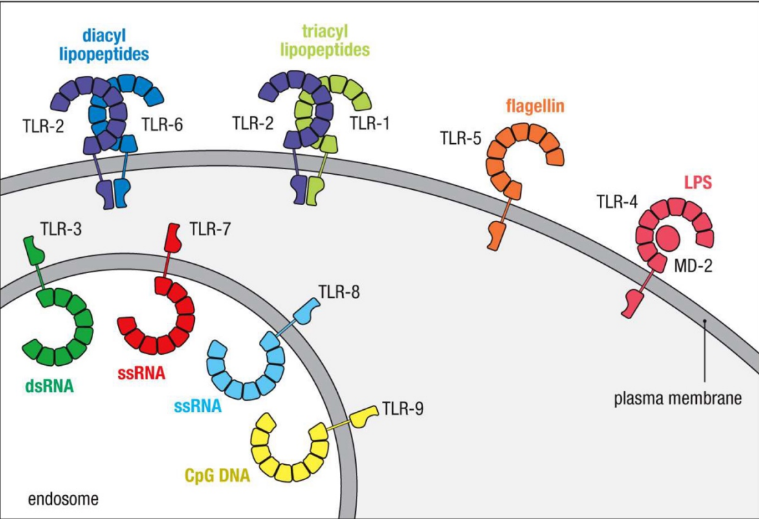

Intro
- 生科不考，沒教不考
- β-lactamases destroy
antibiotics such as penicillin

- Lipopolysaccharide (LPS)
- Lipid A 致病
- Core 含2-keto-3-
deoxy-octanoate(KDO)

- protoplasts
- mycolic acids(acid-fast):讓細菌不被 Gram-stained
重組
Homologous recombination (同源) and Non-homologous recombination:
- 幾乎相同序列
- non- 需要酵素

Site-specific recombination
- ex. 噬菌體
- 需要特定序列、酵素

Mutation
- Intercalating agents (Chemical agents)
- 改變DNA鹼基對之間距離，導致配對錯誤
Gene exchange
Transformation
- 可以用化學方法促進DNA通透
Conjugation
- Sex pilus 釣魚收線

Conjugation
- Generalized or Specialize
格蘭氏染色
Positive
- 單層膜
- Teichoic acid
Negative
- 雙層膜
- Lipopolysaccharide (LPS)
- Peptidoglycan
- Fimbriae
- 用來附著，不一定有

消毒
- Antisepsis
- for 活體，化學
- Sterilization
- 燒毀！
- Disinfection
- 剩下 Spore

spore
只有
- Bacillus
- 好氧格蘭氏陽性桿菌
- Clostridium
- 厭氧格蘭氏陽性桿菌
Antisepsis
- Alcohols
- non-enveloped viruses(沒外套膜)不能殺
- Spore, some fungi 不能殺
- Chlorhexidine (CHX)
- 德恩奈漱口水能殺 SARS-CoV-2
- Triclosan
- 高露潔用這個
- 但是好像會致癌
Disinfection and Sterilization
- Oxidizing
- 3-6% Disinfection
- 10-25% Sterilization
- Chlorine compounds
- 蔡衍明乾杯
- Aldehydes
- 蛋白質軟化
- Radiation
- 痛扁DNA (TT Dimer)
- 抗生素
- Protosil (Sulfanilamide)
- Penicillin
致病
黏細胞
gram’s negative: Pili, Fimbriae


Endotoxin
A.K.A Lipopolysaccharide (LPS)
- 可活化血小板及凝血系統為革蘭氏陰性菌造成敗血症的主因
- T independent
A-B exotoxin
- B for bounding, A for action
都要背。。。

逃避免疫
- Bacterial Capsules
- 莢膜，辨識不能

- 莢膜，辨識不能
- Intracellular replication
- 躲進細胞

- 躲進細胞
- β-lactamase 直接分解抗生素
細菌
Bacillus anthracis (炭疽桿菌, G+)
- G(+)
- Spore 躲進Macrophage ，環遊世界
- Capsule: poly-D-glutamic acid
- 3 proteins
- Protective Antigen(PA83): B toxin
- Edema factor : 水腫， A toxin
- Lethal factor :致命，殺細胞，A toxin
- 2 exotoxin
- Edema toxin = PA63+EF
- Lethal toxin = PA63+LF
20不見了
Tip
 - EF → cAMP
- cAMP 在腸道導致腹瀉
- EF → cAMP
- cAMP 在腸道導致腹瀉
Bacillus cereus (仙人掌桿菌、蠟桿菌, G+)
- 食物中毒
- Emetic form: 米，嘔吐，耐熱
- Diarrheal form: 其他，cAMP，不耐熱
- 大多無 Capsule
Listeria monocytogene (李斯特菌, G+)
- 冰箱存活可能
- 超會躲，可以穿過胎盤，生食

Cotynebacterium diphtheria (白喉棒狀桿菌, G+)
- 唯一宿主
- 被β 噬菌體感染才有毒
- AB toxin
- 抑制蛋白合成
Enterobacteriaceae (腸桿菌科, G-)
- Capsule
- LPS 長一根 O antigen, Lipid A都是抗原
- G(-)


Escherichia coli (大腸桿菌)
- Uropathogenic E. coli (UPEC)
- 泌尿道感染
- 溶血素(hemolysin, HlyA)
- Enterotoxigenic E. coli (ETEC)
- LT enterotoxin
- cAMP 拉肚子
- ST enterotoxin
- STa: cGMP 拉肚子
- LT enterotoxin
- Enteropathogenic E. coli (EPEC)
- 沒有外毒素，黏著(BFP)導致拉肚子，爛
- type III 型分泌系統
- translocated intimin receptor (Tir)插入上皮細胞的細胞膜
- Tir 結合細胞Intimin receptor
- 使細胞表面喪失完整性
- LEE pathogenicity island
- 破壞宿主細胞表面
- Enteroaggregative E. coli (EAEC)
- 疊疊樂
- traveler’s diarrhea
- 慢性腹瀉(chronic diarrhea)和生長遲滯(growth retardation)
- Enterohemorrhagic E. coli (EHEC) / Shiga toxin producing E. coli (STEC)
- O157
- BFP, type III 型分泌系統
- 低燒，血便
- Hemolytic-uremic syndrome(HUS)
- 導致腎衰竭
- (O157)
- enteroinvasive E. coli (EIEC)
- O124、O143、O164
- 藉由ActA 基因的actin-based motility
- 在細胞間伸出偽足流動(Listeria like)
- BFP
- plasmid-encoded bundle-forming pili

Shiga toxin

Salmonella (沙門氏菌)
-
O (somatic) ; Vi (capsular); H (flagellar)
-
Capsule 能做疫苗 16S rRNA typing
-
毒力島I(pathogenicity island I)
- 位在細菌染色體上(bacterial chromosome)。
- 製造出Ssps 蛋白(salmonella-secreted invasion proteins)。
- Type III 型分泌系統。
-
毒力島II(pathogenicity island II)
- 位在細菌染色體(bacterial chromosome)。
- 躲避宿主免疫反應。
- 第二個III 型分泌系統。
- 分泌前列腺素(prostaglandin)，並刺激cAMP 和體液分泌。
-
常潛伏在膽囊裡，造成慢性帶原
More than 2500 unique serotypes
- Salmonella enterica (serotype XXX)
Example
- Salmonella enterica serotype Typhi
→ S. Typhi (傷寒) - Salmonella enterica serotype Typhimurine
→ S. Typhimurine (感染雞卵巢)
Typhoid Fever (傷寒)
- 唯一宿主
- Macrophage 全身跑
- 先進循環，再去膽囊
Shigella (赤痢)
- 唯一宿主，高傳染性，10隻
- 口糞傳染
- Shiga toxin
Yersinia (耶氏桿菌)
Yersinia pestis (鼠疫桿菌)
- Plaque (鼠疫)
- 104隻
- 跳蚤、人傳人（肺部形，100%死亡）
- Type III 分泌系統
Yersinia enterocolitica (小腸結腸炎耶氏桿菌)
- 拉肚子
- 4°C存活
Proteus mirabilis (奇異變形桿菌)
- 亂跑，Swarming
- Urease (+)，產生胺，在膀胱

Pseudomonas aeruginosa (綠膿桿菌)
- 水裏，隨便長
- 好氧
- 侵犯傷口，綠，香
- 高抗藥
- 有 LasA 與LasB (都是elastase，會協同破壞elastin)
- exotoxin A
彎桿菌(G-)
Vibrio (弧菌)
- Gram’s negative
V. cholera (霍亂弧菌)
- 白色掏米水便，拉到膽汁來不及上色
- O1, O139
- 107 隻
- 帶有Cholera toxin 才致病，cAMP
V. parahaemolyticus
- 生魚片
- Kanagawa hemolysin
- β-hemolysis on 人O型血或兔血
V. vulnificus (創傷弧菌/海洋弧菌)
- 肝硬化、肝癌感染危險
Campylobacter
- Microaerophilic (5% O2)
- 只吃portein
C. jejuni (空腸彎曲桿菌)
- 吃未熟的雞鴨牛羊肉
- Guillain-Barre syndrome (巴利氏症候群)
- 打疫苗產生的抗體去攻擊髓鞘，自體免疫疾病
Helicobacter
- 唯一宿主，筷子傳染
- 胃食道逆流
H. pylori (幽門螺旋桿菌)
Neisseria (G-)
- Gram’s negative，球菌

N. gonorrhoeae (淋病雙球菌,gonococcus)
- 唯一宿主
- 子宮頸感染
- Fitz-Hugh-Cutis syndrome: burning with urination, vaginal discharge,vaginal bleeding) → pelvic inflammation → peritonitis, perihepatitis
- No Vaccine
- Capsule 不一定
- 表面抗原亂變
- 武器：
- Pili
- IgA protease
- Endotoxin (lipooligasaccharide; LOS)
- O很短
- Por proteins(Protein I, P.I)
- 破壞 endolysosomes (endosome+lysosome)，鑽出來活在 neutrophils 中
- Opa proteins (Protein II, P.II)
- (國考題：幫助細菌Adhesion)
- Rmp proteins (Protein III, P.III)
- 幫助細菌抵抗補體及抗生素。
N. meningitidis (腦膜炎雙球菌)
-
Meningococcus
-
Capsule
-
武器：
- Pili
- IgA protease
- LOS
-
唯一宿主
-
Waterhouse–Friderichsen syndrome (猛爆性腦膜炎雙球菌菌血症)
-
截肢

Staphylococcus (葡萄球菌，G+)
- Gram’s Positive
- Catalase 有氣泡 (區別 Streptococci)
- 兼性厭氧
- 高鹽生存
- Hyaluronidase
- DNase

毒素
- Portein A:抑制 IgG
- Cytotoxin: 破壞膜

S. aureus (金黃色葡萄球菌)
- 全溶血(β hemolysis)
- Coagulase-postive (凝固酶陽性)
- Cytotoxin:
- α: 全溶血
- β: 水解磷脂
- δ: 介面活性劑
- γ and Panton-Valentine (P-V): 穿孔
- Exfoliative toxins (脫皮毒素)
- proteases
- ETA: heat stable, phage
- ETB: plasmid
- Enterotoxins A (Heat stable)
- Toxic shock syndrome toxin-1 (TSST-1)
- Superantigen
- 衛生棉感染
- Coagulase
- fibrinogen 變成不可水解的 fibrin
- 保護菌體
- 疾病
- 菌血症 (Bacteremia)
- 肺炎 (Pneumonia and Empyema)
- 關節炎 (Septic arthritis)
- 骨髓炎 (Osteomyelitis)
Methicillin-resistant S. aureus (MRSA)
- β-lactam 抑制 PBP2A 合成細胞壁
- MRSA 產生受體結合 β-lactam

Coagulase-negative staphylococcus (CoNS)
- S. epidermidis
- S. saprophyticus
- 泌尿道感染
Streptococci (鏈球菌，G+)
- Catalase negative
- C-carbohydrate
- 細胞壁上多糖
- 區分 GAS, GBS
- 兼性厭氧
S. pyogenes (化膿性鏈球菌，GAS)
- β-hemolysis
- Groop A Streptococci (GAS)
- Hyaluronic acid capsule (玻尿酸夾膜)
- M protein
- 用 emm gene 分類
- 抑制 C3b

- M-like proteins
- 抑制 C3b
- C5a peptidase
- Streptococcal pyogenic exotoxin (erythrogenic exotoxin, 化膿毒素)
- Superantigen
- Streptolysins (hemolysins)
- Streptolysin S (SLS)
- oxygen stable
- 有毒
- Streptolysin O (SLO)
- oxygen labile,
- Streptolysin S (SLS)
- Streptokinase
- 溶血栓
- 疾病
- pharyngitis (咽喉炎)
- Scarlet fever (猩紅熱)
- Pyoderma (impetigo;膿疱病)
- Erysipelas (丹毒)
- 有邊界的紅腫
- Cellulitis (蜂窩組織炎)
- Necrotizing fasciitis (壞死性筋膜炎)
- Bacteremia
- Puerperal sepsis
- Puerperal sepsis (產褥熱)
- Rheumatic fever (風濕熱)
- Acute glomerulonephritis (急性腎絲球腎炎)
Streptococcus agalactiae (無乳/B/乙型鏈球菌，GBS)
- group B streptococci (GBS)
- β-hemolysis
- CAMP test postive (區分 group A, B)
- 疾病
- Meningitis and Sepsisin neonates (新生兒腦膜炎、敗血症)
- 腦脊隨液、PCR 檢測
- 陰道有，無症狀
- Meningitis and Sepsisin neonates (新生兒腦膜炎、敗血症)
Viridians Streptococci (草綠鏈球菌)
-
只有 S. pneumoniae 高致病
- 內生性
-
α-hemolysin
-
疾病
- 蛀牙
- S. mutans, S. sobrinus
- Subacute endocarditis (心內膜炎)
- 蛀牙
S. pneumoniae
- 多重夾膜
- 做疫苗(PPV23, PCV13)

- 做疫苗(PPV23, PCV13)
- IgA protease
- Pneumolysin
- 結合 cholesterol，穿孔
- Quellung (夾膜腫脹測試)
- 遇到血清，夾膜暴增
- 疾病
- 流感後肺炎
- Sinusitis (鼻竇炎)
- otitis media (中耳炎)
- Meningitis (腦膜炎)
- Bacteremia
Enterococcus (腸球菌，G+)
- 長得像鍊球菌
- 高鹽、bile salt 生存
- 臨床
- Enterococcus faecalis (糞腸球菌, 75%)
- 泌尿道感染
- Enterococcus faecium (屎腸球菌, 20%)
- Vancomycin resistant
- Enterococcus faecalis (糞腸球菌, 75%)
- 疾病
- Urinary tract infections
- Peritoneal infections (腹膜感染)
- Bacteremia
Mycobacterium (分枝桿菌屬)
- 需氧
- 長很慢(20hrs 分裂)
- 非典型G+
- 細胞壁含有過多的脂類，無法直接用水溶性染劑做染色
- carbolfuchsin 染，酸性酒精脫色
- acid fast stain +
- 不產生外毒素，靠免疫
- 細胞壁
- Mycolic acid
- Lipoarabinomannan(LAM)
- 類似 O antigen

- 類似 O antigen
M. tuberculosis (結核病，Mtb)
-
Intracellular pathogen
- 鑽進 Macrophage
- 引發 TH1 分泌 IFN-γ，移除 Macrophage
- 太多 Macrophage 感染導致 Caseous necrosis (乾酪性壞死)
-
唯一宿主
-
檢測
- 痰液
- Tuberculin skin testing (TST)
- 注射結合病蛋白，看皮膚腫塊直徑
- 僅代表病史
- Interferon-γ release assays (IGRA)
- 丟抗原，量血清 IFN-γ
- Microscopy
- acid-fast stain +
- 高特異性
- 慢（數月）
- PCR
-
藥
- Rifampin (RMP)
- Isoniazid (INH)
- Pyrazinamide (PZA)
- 初期
- Ethambutol (EMB)

-
疫苗： BCG (牛型分枝桿菌)
Mycobacterium leprae (痲瘋病)
-
Hansen’s Disease
-
唯一宿主
-
病徵
- Tuberculoid leprosy (類結核型)
- 觸覺喪失
- TH1，免疫強
- Lepromin skin test (+)
- Lepromatous leprosy (麻瘤型)
- 到處有結節
- TH2，高傳染
- 完全失區肢體感覺
- 到處有結節
- Tuberculoid leprosy (類結核型)
-
檢測
- acid-fast stain +
- 類結核型
- acid-fast stain +
-
治療
- 無疫苗
- Sulfones
- Rifampin
- Clofazamine
- 麻瘤型
Infections by non-tuberculosis mycobacteria (非結核型分枝桿菌，NTM)
- M. avium complex (鳥型分支桿菌，MAC)
- AIDS 死亡
- azithromycin 治療
- M. kansaii
- 類似 TB
- M. marinum
- 游泳池刮傷
- M. ulcerans
- 潰癢
- M. fortuitum complex (rapidly growing)
- 傷口感染，局部膿
Nocardia
- Gram’s stain 染不上去的
- Weakly acid-fast stain
- 細胞壁含有 mycolic acid
- 好氧
- buffered charcoal yeast extract(BCYE) 培養基
- β-lactam 抗性
- Intracellular pathogen
- 呼吸傳染
- 症狀
- 肺
- 皮膚
Actinomyces (放線菌，G+)
- 厭氧
- Endogenous infection (自產自銷)
- ”臼齒“菌落
- 組織中毛毛邊界 (像黴菌)，放射狀紫色條紋

Cutibacterium(痤瘡丙酸桿菌，Proprionibacterium，G+)
- 厭氧
- 青春痘
- Catalase+
Pasteurellaceae (巴斯德氏菌科，G-)
Haemohilus (嗜血桿菌)
- 兼性厭氧
- 莢膜
- 不吃 lactose
- 巧克力培養基
- Hemin (X factor)
- NAD (V factor)
H. influenzae
- Type B strains 致病 (HiB)
- 有疫苗
- Hib conjugate vaccine
- 莢膜上有 polyribitol phosphate (PRP)
- 免疫辨識
- IgA proteases
- 打粘膜的細菌才有
- 疾病
- Meningitis (嬰幼兒腦膜炎)
- Epiglottitis (會厭炎)
H. ducreyi
- soft chancre / chancroid (軟性下
疳) in men- 類似梅毒
H. aegyptius
- 結膜炎
- 埃及大眼
Aggregatibacter
A. actinomycetemcomitans (伴隨放線菌)
- subacute endocarditis (亞急性心內膜炎)
- 從牙齒跑進來
Pasteurella (巴斯德桿菌)
- 動物傳人
- P. multocida
Bordetella (G-)
B. pertussis (百日咳)
- 黏在呼吸道上皮細胞
- Pertactin 黏
- 只能人傳人
- 好氧
- Pertussis toxin
- AB toxin
- A: S1
- B: S2-S5

- AB toxin
- 分期(菌量逐漸下降)
- Catarrhal phase (黏膜期)
- 最具傳染力
- Paroxysmal phase (發作期)
- Convalescent phase (恢復期)
- Catarrhal phase (黏膜期)
- 超難培養
- 玫瑰培養基
- 疫苗
- DTaP (acellular vaccine)
Francisella and Brucella(G-)
- 人畜共通
Francisella tularensis
- chocolate, buffered charcoal yeast extract(BCYE) 培養基
- Intracellular pathogen
- Tularemia (兔熱病)
- 獵獵獵人
- Ulceroglandular (潰瘍腺, most common)
- Oculoglandular (眼腺, contamination of eye)
- Typhoidal (腸傷寒)
- Pneumonic
- Oropharyngeal and gastrointestinal diseases
Brucellosis ?
- 常見
- B. abortus
- B. melitensis
- Intracellular pathogen
Legionella (退伍軍人，G-)
- 水裡面
L. pneumophila
- Intracellular pathogen
- 污染水源傳染
- 老人會演變成肺炎
- pontiac fever
Clostridium (梭狀桿菌，G+)
- 絕對厭氧
- 清創，截肢
- Spore
- 腸胃道好朋友
C. difficile
- 難養到名字叫難養
- 抗生素濫用牙起來
- Antibiotic-associated diarrhea
- Toxin
- enterotoxin (toxin A)
- disrupt the tight cell-to-cell junction
- Cytotoxin (toxin B)
- enterotoxin (toxin A)
C. perfringens (產氣梭狀桿菌)
- 好大一隻
- 很多 toxin 分解組織(用以分類)
- α toxin : 軟磷脂酶
- Gas gangrene (氣性壞疽)
- 分解組織產氣
- 好發於糖尿病，截肢

C. tetani (破傷風)
- 雞腿狀
- 長很慢
- Tetanospasmin
- AB toxin
- 神經毒
- Block GABA


C. botulinum (肉毒梭孢桿菌)
-
botulinum neurotoxin
- 不可逆切 SNARE ， Acetylcholine 出不來
- flaccid paralysis (弛緩性麻痹)
-
嬰兒不能吃蜂蜜，可能有 C. botulinum
Spirochetes (螺旋體，G-)
- 細得看不到
- Endoflagella
- 多根，移動快
- 醣脂與脂蛋白外膜，無 LPS


Treponema pallidum (梅毒螺旋體)
- Chancre (無痛下疳，法文), Syphilis
- 無毒素，免疫
- 唯一宿主
- 對氧氣極度敏感(只能體液傳染)
- Penicillin
- Anticardiolipin Abs (rapid plasma reagin )
- 一個月才測的到抗體
- 非特異性
Borrelia burgdorferi (伯氏疏螺旋體)
- 中間宿主: Ticks 蜱蟲
- Lyme disea
- 遊走性紅斑
- 慢性萎縮性皮炎
- 神經異常

- Relapsing fever
- 發燒(3-7d)又不燒(7d)，來來回回
- 肝脾腫大(splenomegaly and hepatomegaly)
Leptospira interrogans (問號鉤端螺旋菌)
- 寄生在腎臟
- 尿液傳染
- 人畜共通
- 唯一可培養的螺旋體
- Weil disease
- 打爆肝腎
Mycoplasma (黴漿菌，G-)
- 最小可以體外培養 (0.3-0.5μm)
- 除了 M. pneumoniae 好氧，都是兼性厭氧
- 無 peptidoglycan，用 Sterols 維持穩定(就他有)
- β-lactam resistant

L form Bacteria
- 沒 peptidoglycan
M. pneumoniae
- 長的慢
- Superantigen
- 引發非典型肺炎
非典
- 非典沒濃痰

Ureaplasma urealyticum (溶尿尿漿菌)
就很像 Mycoplasma
Chlamydia and Chlamydophila (批衣菌，G-)
- chlamydo: 外套
- 無 Peptidoglycan，有 LPS(很少)
- 絕對寄生
- 美國最盛行的性病
- 兩種型態
- Elementary body(EB): 傳播用
- Reticulate body(RB): 較大，細胞內生長繁殖
Chlamydia trachomatis (砂眼披衣菌)
- Serovars (血清型)分類
- 疾病
- Trachoma (砂眼)
- Serovars A-C
- 泌尿道感染
- Serovars D-K
- Lymphogranuloma venereum (LGV ，性病)
- Serovars L1, L2, L3
- 輸軟管阻塞
- Fitz-Hugh-Cutis syndrome
- Trachoma (砂眼)
- 治療
- doxycycline, azithromycin
Chlamydophila pneumoniae
- 非典
- Chlamydophila psittaci (鸚鵡熱)
- 攻擊上呼吸道
Rickettsia (立克次體)
- 絕對寄生
 - 斑疹傷寒
- 斑疹傷寒

- 治療
- doxycycline, azithromycin
Orientia tsutsugamushi (恙蟲東方體)
- 蘭嶼草叢一堆
- 東亞盛行
Coxiella bumetii
- 像 Chlamydia
- LPS
- Phase I
- 抗原性差，晚偵測到 Ab
- 慢性期
- Phase II
- O antigen 不見
- 反而有抗原性強，先測到 Ab
- Phase I
- Q fever
- 牧場土裡面
- 慢性期，致死，無疫苗
整理


唯一宿主
- Cotynebacterium diphtheria (白喉棒狀桿菌, G+)
- Mycobacterium tuberculosis
(TB) - Mycobacterium leprae (痲瘋病)
- Typhoid Fever (傷寒)
- Shigella (赤痢)
- H. pylori (幽門螺旋桿菌)
- N. meningitidis (腦膜炎雙球菌)
- N. gonorrhoeae (淋病雙球菌,gonococcus)
- Bordetella pertussis (百日咳)
- Mycoplasma pneumoniae (肺炎黴漿菌)
好氧厭氧
- 好氧
- Bacillus
- Pseudomonas aeruginosa (綠膿桿菌)
- Legionella
- Bordetella pertussis (百日咳)
- Mycobacterium (分枝桿菌屬)
- Nocardia
- Mycoplasma pneumoniae(肺炎黴漿菌)
- Francisella
- Brucella
厭氧菌會產生 abscess (膿腫)，Metronidazole 治療
- 厭氧
- Actinomyces (放線菌，G+)
- Cutibacterium(痤瘡丙酸桿菌，G+)
- Clostridium (梭狀桿菌，G+)
- 牙齒上G-
- Porphyromonas gingivalis (PG)
- 牙周炎，protease，鹼性
- Porphyromonas gingivalis (PG)

溶血
α hemolysin
Viridians Streptococci (草綠鏈球菌)
β
S. aureus
S. pyogenes (GAS)
S. agalactiae (GBS)
AB toxin
| 毒素 | 機制 | 菌種 |
|---|---|---|
| Edema toxin | cAMP ↑ | B. Anthracis |
| cholera toxin (霍亂毒素) |
cAMP ↑ | Vibrio cholera |
| Bacillus cereus Diarrheal form |
cAMP ↑ | B. cereus |
| Shiga toxin | 60S 核醣體的28S rRNA，apoptosis | Shigella, EHEC |
| Lethal toxin | apoptosis | B. Anthracis, |
| Diphtheria toxin (白喉毒素) |
轉譯(EF2) | Cotynebacterium diphtheria |
| exotoxin A | Pseudomonas aeruginosa | |
| Pertussis toxin | cAMP↑ | Bordetella pertussis (百日咳) |
| Tetanospasmin | Block GABA | Clostridium tetani |
superantigen
| 毒素 | 菌種 |
|---|---|
| Enterotoxin A | Staphylococcus aureus |
| TSST-1（Toxic Shock Syndrome Toxin-1） | |
| Streptococcal pyogenic exotoxin (erythrogenic exotoxin, 化膿毒素) | Streptococci pyogenes |
| 肺炎黴漿菌(Mycoplasma pneumoniae) | |
Enterotoxins
| 毒素 | 機制 | 菌種 |
|---|---|---|
| Heat-Labile enterotoxin | cAMP ↑ | ETEC |
| Heat-stable enterotoxin | cGMP ↑ | ETEC |
| Enterotoxin A | superantigen | Staphylococcus aureus |
| Toxin A | disrupt the tight cell-to-cell junction | Clostridium difficile |
Protease
| 毒素 | 機制 | 菌種 |
|---|---|---|
| Exfoliative toxins 脫皮毒素 |
破壞 stratum granulosum 的 intercellular bridges | Staphylococcus aureus |
| IgA proteases | - | Neisseria meningitidis (腦膜炎雙球菌) |
| Neisseria gonorrhoeae(淋病雙球菌) | ||
| Streptococci pneumoniae(肺炎連球菌) | ||
| Haemohilus influenzae | ||
| LasA, LasB | Zn依賴，降解宿主 elastin | Pseudomonas aeruginos |
GPC

Intracellular pathogen
- Typhoid Fever (傷寒)
- Mtb and Nocardia
- Francisella and Brucella
- Legionella
蟲蟲
| 病原 | 病媒 | 疾病 |
|---|---|---|
| Bartonella bacilliformis | 體蝨(human body louse) | 五日熱(5-day fever) |
| Borrelia burgdorferi | 蜱蟲 | Lyme disea |
| Borrelia recurrentis | 回歸熱(relapsing Fever) | |
| Francisella tularensis | 硬蜱(hard ticks)、鹿蠅(deerflies) | 兔熱病tularemia |
| R. rickettsii | 硬蜱(hard tick) | 洛磯山斑疹熱(Rocky mountain spotted fever) |
| R. prowazekii | 體蝨(human body louse) | 流行性或蝨傳性斑疹傷寒(epidemic louse-borne typhus) |
| R. typhi | 鼠蚤(rat fle)貓蚤(cat flea) | 地方性斑疹傷寒或鼠斑疹傷寒(endemic murine typhus) |
| O. tsutsugamushi | 蟎蟲(mites) | 恙蟲病(scrub typhus) |
| R. akari | 蟎蟲(mites) | 立克次體痘(rickettsialpox) |
疾病
心內膜炎
- 亞急性心內膜炎
- Aggregatibacter actinomycetemcomitans (伴隨放線菌)
- Viridans Streptococci
- Staphylococcus epidermidis
- 感染性心內膜炎
- Streptococci sanguinis (血鏈球菌)
- Staphylococcus aureus
肺?
- Streptococcus pneumoniae
- 最常見
- Staphylococcus aureus
好氧
- Mycobacterium tuberculosis (肺結核)
- Intracellular pathogen
- Nocardia
- Intracellular pathogen
- Bordetella pertussis (百日咳)
- Legionella pneumophila
- 老人會演變成肺炎
- Mycoplasma pneumoniae
- 非典
- Chlamydophila pneumoniae
- 非典
meningitis
| Age Group | Causes |
|---|---|
| Newborns | Haemophilus influenza Group B Streptococcus, Escherichia coli, Listeria monocytogenes |
| Infants and Children | Streptococcus pneumoniae, Neisseria meningitidis, Haemophilus influenzae type b(Hib) |
| Adolescents and Young Adults | Neisseria meningitidis, Streptococcus pneumoniae |
| Older Adults | Streptococcus pneumoniae, Neisseria meningitidis, Listeria monocytogenes |
中耳炎與鼻竇炎
- Haemophilus influenzae
- Streptococcus pneumoniae
菌血症/ 敗血症(septicemia)
進入血液需要莢膜，所以大部分(75%)的致病菌都擁有K1 莢膜抗原(K1 capsular antigen)
- Pseudomonas aeruginosa (綠膿桿菌)
- EIEC: 是敗血症最常見的革蘭氏陰性桿菌致病原。
- 所有沙門氏桿菌
- Neisseria
- Haemophilus influenza (流感嗜血桿菌)
- Bartonella: 反反覆覆
- Francisella
- Bacteroides fragilis: 菌血症最常見的厭氧菌病原
- Candidasis albicans
腎
- 溶血性尿毒症候群(hemolytic uremic syndrome, HUS)，
- EHEC
- Shigella
- 急性腎小球腎炎(acute glomerulonephritis)
- Streptococcus pyogenes (GAS)
食物中毒
| 菌種 | 來源 |
|---|---|
| Campylobacter | 乳製品、家禽類、肉類 |
| Salmonella | 蛋類、肉類 |
| Clostridium perfringens | 肉類(豬肉)、蔬菜 |
| Clostridium botulinum | 居家自製罐頭、蜂蜜 |
| Bacillus cereus | 肉類、米飯(HS)、澱粉類食物 |
| EHEC(O157:H7) | 牛絞肉、綠色菜葉 |
| Vibrio | 海鮮(尤其牡蠣) |
| Staphylococcus aureus | 烹調要求高的食物(如蛋、鮪魚、雞肉、馬鈴薯、通心粉、三明治餡料、奶油糕點、奶油派、巧克力閃電泡芙等) |
| 星狀病毒(Astrovirus) | 海鮮 |
| 杯狀病毒科(Calicivirus) | 牡蠣 |
疫苗
- Streptococci pneumoniae
- 夾膜
- PPV23, PCV13
- Mycobacterium tuberculosis
- BCG
- Hib
- Hib conjugate vaccine
- Bordetella pertussis
- DTaP (蛋白質)
一些比較
- 噬菌體感染毒性
- cotynebacterium diphtheria：β 噬菌體
- Shigella toxin: 溶原性噬菌體(lysogenic bacteriophages)
- O 抗原？其實不同種
- STEC: O157:H7
- 霍亂弧菌: O1, O139
抗生素

peptidoglycan & Cell membrane
β-lactam
- Penicillin (PCN)
- Cephalosporin
- Carbapenems: Imipenem, Meropenem, Ertapenem
- Monobactam: Aztreonam
機制
Peptidoglycan 形成時 Lys Ala 結合，Penicillin 類似Ala，卡住 Penicillin binding protein (PBPs)


Glycopeptides
- Vancomycin(萬古霉素)
- 分子超大，對陰性無效
- Teicoplanin
Polypeptides
- Bacitracin
- 腎毒性太強
- polymycin
Lipopeptide
- Daptomycin
- 仿間最後線
Polypeptides
- Polymycin
抑制蛋白質形成
50S ribosome
- Macrolide (巨環): Erythromycin, Azithromycin
- Lincosamide(林可胺): Clindamycin
- Oxazolidinones (噁唑烷酮): Linezolid
- Chloramphenical
30S ribosome
- Aminoglycoside: Gentamicin, Tobramycin, Amikacin
- Tetracycline: Tetracycline(四環黴素), Doxycycline, Minocycline
- Glycylcyclines
抑制核酸複製
- Quinolones
- 抑制解蜁(gyrase)
- Fluoroquinolone: Ciprofloxacin, Levofloxacin,
- Moxifloxacin
- Metronidazole
- 專扁厭氧菌
- Rifampin
- Mycobacterium tuberculosis（結核箘）有效
- 橘尿

抑制代謝
Folic acid 合成
- Sulfanilamide
- 類似PABA

- 類似PABA
- Trimethoprim

整理表
| 類別 | 名稱 | 作用位置 | |
|---|---|---|---|
| β-lactam | Penicillin (PCN) | wall | Ala 相似物，競爭PBP結合位 |
| Cephalosporin (頭孢子黴素) |
|||
| Carbapenems (碳青黴烯) |
|||
| Monobactam (單環內醯胺) |
|||
| Glycopeptides | Vancomycin (萬古霉素) |
阻止轉肽反應(串接)，G(-)無效 | |
| Teicoplanin | |||
| Bacitracin | |||
| Polypeptides | Polypeptides (桿菌肽) |
干擾"肽聚醣合成，G(-)無效 | |
| Lipopeptide | Daptomycin (達托黴素) | membrane | 打洞，G(-)無效 |
| Polymyxins | |||
| Macrolide (大環內脂) |
Erythromycin (紅黴素) |
50s | Translocation |
| Azithromycin | |||
| Lincosamide (林可胺) |
Clindamycin | ||
| Oxazolidinones (噁唑烷酮) |
Linezolid | - | |
| Chloramphenicol (氯黴素) |
阻止tRNA與50S的A位點的結合 | ||
| Streptogramin | - | ||
| Aminoglycoside | Gentamicin (慶大黴素) |
30s | |
| Tobramycin | |||
| Amikacin | |||
| Streptomycin | |||
| Tetracycline | Tetracycline (四環素) | ||
| Tigecycline (老虎黴素) |
|||
| Doxycycline | |||
| Minocycline | |||
| Sulfonamide (磺胺) | Tetrahydrofolic acid(四氫葉酸) | 氨基苯甲酸（PABA）類似物 | |
| Trimethoprim | |||
| Rifampin (利利肺寧) | 轉錄 | 抑制 RNA polymerase 橘尿，肺結核 |
|
| Quninolones (喹諾酮) |
Ciprofloxacin (環丙沙星) |
複製 | 抑制DNA gyrase (一種解旋酶） |
真菌
- Membrane
- ergosterol(麥角固醇)
- Cell wall
- chitin
- β1,3 D-glucan
- mannan
型態
Yeast
- 像細菌
- Pseudohyphae
 ### Hyphae {#hyphae }
- Sepate hypha
- Coenocytic hypha
### Hyphae {#hyphae }
- Sepate hypha
- Coenocytic hypha

Dimorphic

菌絲
- Vegetative hyphae (營養菌絲)
- Aerial hyphae (空中菌絲)

Spore
-
Sexual spores
- Zygospore (接合孢子)
- Ascospore (子囊孢子)
-
Asexual spores
- Sporangiospores (孢子囊孢子)

- Blastospore (芽生孢子)
- Chlamydospore (厚膜孢子)

- Conidia (分生孢子)
- Arthrospore (分節孢子)
- Phialospore (瓶孢子)

- Sporangiospores (孢子囊孢子)
分類
Ascomycota (子囊菌門)
- 有性: Ascospore
- 無性: Conidia, Arthrospore, Phialospore, Chlamydospore
- Hyphae 連接世代
- Ascus(n+n)→ Karyogamy(2n)→ Ascospore(n)

Basidiomycota (擔子菌門)
- Basidium(n+n → 2n) → basidiospore(n,有性)
- 沒無性胞子

Mucormycetes (接合菌, Zygomycetes)
- 產生Sporangiospores(孢子囊孢子)
- Zygospore (接合孢子)
- n+n → 2n → n

Microspora (微孢子門)
- 絕對寄生
- No sexual spores
- Spore 注射進入細胞，青蛙下蛋、長出細胞膜，再炸一堆Spore
- 超噁

製藥
| 抗真菌藥物 | 機制 | ||
|---|---|---|---|
| Amphotericin B | 干擾細胞膜合成 | ||
| Nystatin | |||
| Azoles | 抑制麥角醇合成 | lanosterol 1,4α-sterol demethylase | |
| Allylamines | Naftifine, Terbinafine, Butenafine |
||
| Morpholine | |||
| 5-Flucytosine(5-FC) | 抑制DNA合成 | ||
| Griseofulvin | 干擾紡錘體形成，影響有絲分裂 | ||
| Echinocandins | Anidulafungin, Micafungin, Caspofungin, Aminocandin |
抑制葡聚糖合成 | |
| Nikkomycin | 抑制幾丁質合成 | ||
Cell membrane
Allylamines
- 抑制 ergosterol 合成

Azoles
- 抑制 ergosterol 合成

Polyenes
- 認 ergosterol接在膜上，穿孔
- Amphotericin B
- 強，七傷拳
Cell wall
Echinocandins
- 抑制 1,3-β-D-glucan
cell division
Griseofulvin
- 停在角質層，長期有效
nucleic acid synthesis
Fluorocystine
- cystine 類似物
- Amphotericin B 協同

感染

Athlete’s foot (香港腳)
- Trichophyton
- 吃 Keratin(角蛋白)

Histoplasmosis
- Grow inside the phagocytes

念珠菌(Candidasis)
- 白色念珠菌(C. albicans)
- 小朋友/嬰兒
- 光滑念珠菌(C. glabrata)
- 第二好發
- 成人
- 抗生素抗性
- 不大產生 hyphae
- 近平滑念珠菌(C.parapsilosis)
- 小朋友/嬰兒
- 熱帶念珠菌(C. tropicalis)
Candida albicans 白色念珠菌
- 70% 院內黴菌感染
- pseudomembranous candidiasis
- Thrush (鵝口瘡)
- 偽膜狀白斑(擦得掉)
- 紅斑性念珠菌感染(erythematous candidiasis)
- 最常見，被感染的部位呈扁平、紅色，偶爾會疼痛
- 口角炎(angular cheilitis)
- 中央菱形舌炎(median rhomboid glossitis)
- 舌背中後段舌乳頭消失，通常無症狀。
- 假牙口腔炎(denture stomatitis)25
- 假牙戴太久、口腔衛生不佳造成。
- Vulvovaginal candidiasis (外陰陰道念珠菌病)

嘴
- 治療
- Nastsatin
- Azoles

Cryptococcosis
- 無 hyphae
- Cryptococcus neoformans (新型隱球菌)
- Basidiomycota
- 腦膜炎
- 小心鴿子
Pneumocystis jirovecii (卡氏肺囊蟲)
- 無 ergosterol
整理
致病機轉
- 1,3-α-glucan
- 皮炎芽生菌(Blastomyces dermatitidis)
- 夾膜組織胞漿菌病(capsulatum Histoplasmosis)
- 副球黴菌病(Paracoccidioidomycosis)
- 瀰漫性疾病(disseminated disease) -> 影響腎上腺
- Histoplasmosis
- Paracoccidioidomycosis
- 胞內寄生
- Histoplasmosis
- Penicilliosis
鈣結合蛋白(calcium-binding protein)—CBP1，對於胞內寄生獲得鈣離子很重要。
病毒
- Ivanovski and Beijerinck 證明菸草疾病是病毒引起(1890s)
- 起源尚無定論
- 數量最多的微生物
- 參與了細菌、古菌、真核生物的演化
- 直徑 20~450nm
- 無套膜 -> 口糞傳染
結構

- Covering
- enveloped
- HIV, BC肝, Corona, Flu
- Nake
- 嘗病毒, A 肝
- enveloped
- capsid types
- Helical
- 伊波拉病毒
- Icosahedral
- Helical


- Capsomeres
- 組成 Capsids 蛋白質次單元
Papillomaviruses & Polyomaviruses
- 雙股環狀 DNA
- Bind p53, p105RB 基因 → immortalize (transform)
- p53
- Papilloma E6
- Polyoma T antigen
- p105RB
- Papilloma E7
- Polyoma T antigen
- p53
Papillomaviruses
- 在表皮(1-4)、黏膜 (genital:6, 11)
- 接觸傳染
- dysplasia (不典型增生)
- Warts (疣)
- Cervical cancer (子宮頸癌)
- 促進 keratin (角蛋白) 產生 → epithelial spikes (papillomatosis)

- 檢測
- Pap smear 子宮抹片
- 巴潘尼克氏染色法( Papanicolaou stain )
- koilocytotic (一圈透明)

- koilocytotic (一圈透明)
- 疫苗 (HPV-6, 11, 16, 18)
Polyomaviruses
- SV40, BK, JC 沒在人身上造成癌症
- BK: kidney
- JC: Central nervous
- 實驗室讓細胞不停生長
- 免疫缺失患者身上:
- BK: 出血性膀胱炎（hemorrhagic cystitis; HC）
- JC: 攻擊 CNS 造成 Progressive multifocal leukoencephalopathy (PML)
Adenovirus (腺病毒)
- 雙股環狀 DNA
- Transformation (只在動物)
- E1A: bing pRB
- E1B: bind p53
- 呼吸、接觸傳染
- 症狀
- 上呼吸道
- 腹瀉 (僅次於諾羅)

Parvovirus
- 最小 DNA 病毒 (18-26nm)
- 感染紅血球
- 只有 B19 造成人類疾病，十分普遍
- 第五熱、4 - 15 歲
- 呼吸傳染
Herpesviruses (皰疹病毒)
-
製造 DNA polymerase
-
viral matrix proteins
- 病毒顆粒內
- 幫助本身 DNA 複製
- 躲免疫
- Tegument proteins
- ER 獲得
-
轉錄
- α: immediate-early (ie) protein
- DNA‐binding proteins
- β: early protein
- Transcription factors
- DNA polymerase
- γ: late protein
- structural proteins
- α: immediate-early (ie) protein
-
轉錄多樣性
- Direct repeats (照順序重複)
- Inverted repeats(逆向重複)
- Latency
- 潛伏
- LATs（Long-Term Antisense Transcripts）
- LATs 抑制病毒基因表達(轉錄因子、RNAi)，維持潛伏期
Herpes Simplex Virus (HSV，單純疱疹病毒)
- 細胞融合
- Mucoepithelial cells → Neuron
- thymidine kinase 啟動神經細胞合成 DNA
- 兩種
- HSV-1:
- CN V
- HSV-2:
- 性傳染，感染下半身、新生兒疾病
- 骶骨或腰椎神經節(sacral or lumbar ganglia)
- viremia
- HSV-1:
- 疾病
- Encephalitis (腦炎)
- Cold sores(唇疱疹)
- Neonatal HSV: 新生兒死亡、神經殘疾
- Cytopathologic effects(CPE)
- 感染細胞使其破裂
- 檢測
- Tzanck smear
- 也稱為水痘皮膚測試(Chickenpox skin test)、疱疹皮膚測試(herpes skin test)
- 找 Cowdry type A inclusion body
- Tzanck smear
- 治療(針對 DNA polymerase)
- Acyclovir(ACV): guanosine 類似物
- Foscarnet (ex. Pyrophosphate mimic): 抑制病毒 DNA polymerase 上的 pyrophosphate binding site
Varicella‐zoster virus (VZV，水痘‐帶狀疱疹病毒)
- Mucoepithelial cells & T cell → Neuron
- 呼吸道、接觸
- 帶狀疱疹
- 沿著神經移動
- 透過 viremia(病毒血症) 到皮膚
- 水痘
- 小孩風險
- 初見: 肺炎風險
- 治療: ACV、Famciclovir、Valacyclovir
- Reye syndrome：
- 發生在急性發熱性病毒感染後：水痘(varicella)、B型流感病毒和A 型流感病毒
- 兒童服用salicylates (aspirin)會增加風險(同Influenza virus)
- 產生伴有肝功能不全的急性腦炎(acute encephalitis)
- 活體疫苗(for kids)
Epstein-Barr Virus (EBV)
- Latency: B cell
- 唾液傳染(Kiss disease) ，高盛行
- 疾病
- Infectious mononucleosis(傳染性單核白血球增生症)
- 沒啥特異性
- 喉嚨痛、 高燒、頸部淋巴結腫大
- Burkitt’s lymphoma(伯基特氏淋巴瘤)
- B cell 異常增生
- 大下巴
- Nasopharyngeal carcinoma (NPC，鼻咽癌)
- 台灣 60 - 85% NPC 與 EBV 有關
- Infectious mononucleosis(傳染性單核白血球增生症)
- 檢測
- 嗜異性抗體(Heterophile Ab)
- 人類感染 EBV 時 B cell 生產
- 抗原: 動物血球
- Downey cell (Atypical lymphocytes)
- T cell 受 Heterophile Ab 刺激產生
- 具有更嗜鹼(深染)且空泡狀的細胞質
- 細胞核呈現腎形或葉形
- 邊緣因周圍紅血球作用而成鋸齒狀

- 嗜異性抗體(Heterophile Ab)
Cytomegalovirus (巨細胞病毒)
- Monocyte、Lymphocyte、Epithelial cell → Monocyte、Lymphocyte
- 編碼IL-10 的結構類似物
- 最常造成先天缺陷(Congenital defects)的病毒
- 一般人感染沒事
- 免疫低下
- 視網膜炎(retinitis)：脈絡膜視網膜炎(chorioretinitis)
- Oral ulcer
- Owl’s-Eye inclusion body
- 通常是病毒複製、繁殖的地方

- 通常是病毒複製、繁殖的地方
HHV-6, 7
- lymphocytes → T cell
- 7: TH
- 疾病
- 嬰兒(常見) Exanthem subitum/Roseola(玫瑰疹)
- 一開始會持續發燒 acute febrile 約 4 天,但沒有其他感冒的症狀,之後 rash(疹子)跑出來後就會逐漸退燒。
- 成人
- 類似 mononucleosis 的症狀,或是淋巴腫、肝炎。
- 嬰兒(常見) Exanthem subitum/Roseola(玫瑰疹)
Kaposi’s sarcoma-associated herpesvirus (KSHV)
- 感染 B cell
- 為愛滋病(AIDS)患者最常感染的腫瘤病毒(Oncovirus)
整理
- 接觸, saliva 傳染
- Varicella-zoster virus(VZ) 可以透過呼吸系統傳遞

| 亞科 | Genus | Clinical Diseases |
|---|---|---|
| α | Herpes simplex virus type 1 單純疱疹病毒第一型 |
Cold sores(唇疱疹), gingivostomatitis |
| Herpes simplex virus type 2 單純疱疹病毒第二型 |
Herpes genitalia | |
| Varicella‐zoster virus (VZV) 水痘‐帶狀疱疹病毒 |
Chicken pox = varicella,Zoster (shingles) | |
| γ | Epstein‐Barr virus (EBV) | Infectious mononucleosis, Burkitt’s lymphoma, NPC |
| β | Cytomegalovirus (CMV) 巨細胞病毒 |
先天缺陷 TORCH |
| Rosedovirus | 嬰兒 Roseola | |
| HHV‐7 | ||
| γ | HHV‐8 (KSHV) | Kaposi’s sarcoma (primarily in AIDS patient) |
Poxviruses (痘病毒)
-
最大的、構造最複雜(200x300nm)
- 自行攜帶所有 mRNA 合成所需的基因序列與蛋白質
- 唯一 DNA 病毒在細胞質複製、組裝
- 可以編碼一些功能蛋白(Encodes proteins for function),例如:DNA 合成、核酸清除、躲避免疫反應的機制
- 自行攜帶所有 mRNA 合成所需的基因序列與蛋白質
-
呼吸道、結痂傳遞
-
局部性或全身性的膿包、發疹等,如天花、傳染性軟疣(molluscum contagiosum)
-
進入器官:如脾臟、肝骨髓或是其他淋巴結等,而產生膿皰(Pustules)，因痘病毒感染而產生的膿皰非常明顯且容易辨認,此可以隔離人避免傳染。
-
病毒們
- Variola major(smallpox):大痘症(天花),嚴重可致死，1980 年消滅
- Variola minor(Alastrim):小痘症(類天花),比較沒那麼嚴重
- Vaccinia(牛痘病毒): 實驗室做出來當疫苗
- Cowpox(真牛痘病毒)
- Monkeypox(猴痘)
- Molluscum contagiosum(傳染性軟疣)
- 電燒(Electrocautery)
- 接觸傳染
PicoRNA (小 RNA)
-
進入宿主細胞可直接轉譯
-
產生互補 RNA 複製
-
自備 RNA polymerase
-
表面蛋白
- VP1: 結和ICAM-1
-
Hepatovirus A virus (HAV)
- 糞口感染
- 較不會裂解宿主細胞(exocytosis)
- cytolytic
- 宿主細胞裂解
Enteroviruses(腸病毒)
-
糞口感染
- IgA 對抗
-
高環境耐受
-
通常無症狀，不大會引起消化疾病
-
抗體對抗，只有 Poliovirus 疫苗
-
本土化
- Polio(以前)
- Enterovirus 71 (EV71)
- 攻擊神經
- 癱瘓、心肌(myocardial)炎、心包膜(pericardial)、無細菌腦膜炎(Aseptic meningitis)
-
HFMD: EV71, CAV A16

Poliovirus (小兒麻痹)
- 靈長類專一
- 不同程度症狀
- Asymptomatic (90%)
- 限制在口咽、腸道。
- 絕大部分屬於無症狀
- Abortive poliomyelitis (非癱瘓)
- flu-like symptom
- 不攻擊 CNS
- Paralytic poliomyelitis (1%)
- 主要由 type 1 造成(即為小兒麻痺)
- Post-poliomyelitis syndrome
- 特徵和症狀在感染多年後才出現(較嚴重)
- Asymptomatic (90%)
- 診斷
- 糞便(stool specimens，好找)
- 喉嚨(swab specimens，most sensitive)
- 無 antivirals
- 疫苗
- 沙克 Salk: 去活性，肌肉皮下注射
- 沙賓 Sabi: 減毒活性，口服
向神經前進
- 溶解(cytolytic): 炸掉neurons
- 發芽(sprout): motor 倖存重生
- Post-polio syndrome: 新長的過勞，直接躺平 → degenerate, new weakness。
Coxsackievirus
- Coxsackievirus A: 口咽小 水泡
- Coxsackievirus B: 全身
- 胸痛
- 心肌、心包膜炎
- type I DM
Rhinovirus
- 秋冬夢魘
- 呼吸道傳染，一般感冒主因
- 不太喉嚨痛、發燒
- 33 °C gg
- 怕酸
Calicivirus (杯狀病毒科)
- VP1: ICAM-1
Norovirus
- 最常見食物中毒
- 10 顆致病
Coronaviruses
- ss RNA +
- 最大 RNA virus
- 透過 ER, gorgi 釋放
- 結構
- Spike (S)
- 感染用
- membrane glycoprotein(M)
- 抗 INF
- 協助病毒組裝
- envelope protein (E)
- 協助病毒組裝
- nucleocapsid protein (N)
- 協助病毒組裝
- 抗 INF
- 螺旋狀
- Spike (S)

-
生活史
- S 感染，丟出 genomic RNA(+)
- genomic RNA largre protein → RNA polymerase
- genomic RNA → tempalte RNA (-) subggenomic tempalte → subggenomic RNA (+)
- subggenomic RNA (+) 結構蛋白
- tempalte RNA (-) → genomic RNA(+)

-
疾病
- 33-35°C favor
- 上呼吸道
- 就感冒那樣子
- Glycoprotein corona 幫助在腸胃道存活
-
Coronaviridae family 底下只有 β coronavirus 重要
-
名將堂
- Severe Acute Respiratory Syndrome (SARS)
- 非典
- Middle East Respiratory Syndrome (MERS)
- Coronavirus Disease 2019 (SARS-CoV-2)
- 唯一有疫苗
- Severe Acute Respiratory Syndrome (SARS)
Hepatitis Viruses 肝炎病毒
- HAV, HEV
- 沒有套膜
- 糞口傳染
- 消化道 → 血 → 肝 → 膽汁 → 糞
- HBV、HCV、HDV
- 血液或相關體液
- B,D 的 sexual/ventral 高傳染
- 慢性病
- HDV
- 自己做不出套膜，借用 HBV 做的套膜
HAV
- 自然環境隨便活，耐熱 60°C
- 無症狀可傳染
- exocytosis
- 症狀 (小孩多無症狀，多能 self-limited)
- 肝細胞受損: 瀰漫性肝壞死和損害,局部淋巴結腫大、脾腫大
- Cholestasis (膽汁淤積): jaundice (黃疸)、hyperbilirubinemia (高膽紅素血症)。
- albumin 減少(復原不能)
- 檢測: anti-HAV IgM (症狀出現前 10 days)
HBV
-
Hepadnarvirus (肝病毒科)
- enveloped
- DNA virus
- Icosahedral(二十面體) capsid
-
有反轉錄酶
- RNA-dependent DNA polymerase
- 把做出來的 mRNA 變回 dsDNA
-
可以插入宿主 DNA

-
mRNA
- 3.5 kb mRNA
- HBcAg:黏 DNA capsid
- HBeAg:會被分泌出來，可用於檢驗血液傳染性
- 2.1 kb mRNA
- S & M glycoproteins
- 2.4 kb mRNA
- L glycoprotein
- 3.5 kb mRNA
HBsAg: S, L, M
疾病公衛
-
Incubation period :45~120 天。
-
慢性肝炎 → 肝受損 → 肝纖維化(fibrosis) → 肝硬化(cirrhosis) → hepatocellular carcinoma (HCC,肝細胞癌)
-
1985 有疫苗
- recombinant vaccine
- Subunit vaccine (第一代)
- HBsAg
- S gene 的質體植入酵母 (第二代)
- 新生三劑
- 2~5 天、1 個月、6 個月
- 第一個疫苗預防的人類癌症
-
高傳染，20 億大盛行，3.5億慢性，其中65%中國，我們祖國真是太厲害了
- 亞洲剋星
- 健康成人89% 自己好，但孩童gg (30~90%慢性肝炎)
- Cell-mediated immunity (CTL) 很重要
- HBV 能夠在接觸到的表面存活約一週且仍具有 infectivity,如 table-tops、razor blades(剃刀片)、blood stains。
-
HBV 血液檢測
- 除了 HBcAg (黏在 capsid) 之外兩對半抗原抗體
- anti-HBs 才有保護作用
-
急性B肝
- Dane praticle: 完整構造
- Subviral praticle: 有抗原性空包彈
- window stage: HBsAg 驟降 → 測 anti-HBcAg
Subviral 很多(105)，抓不到真的。
Subviral 可做疫苗(HBsAg)
- 慢性肝炎
- 產生 anti-HBe 才可能復原
HCV
- Flaviviridae (黃病毒科)
- RNA 病毒
- 體外培養難
- 一次做一串蛋白質，再用 Protease 切，是個鋼彈模型玩家
- RNA 聚合酶(NS5B)
- 曲有誤 周郎顧
- E1, E2 表面醣蛋白具抗原性

疾病公衛
-
中國和非洲盛行率高，我們祖國真是太厲害了
-
根B肝病情發展相似
-
換肝?沒用
-
三成自癒，七成 gg
-
初期無症狀
-
傳染
- 猩猩和人類only
- 性行爲傳染力不如 B肝
- 最主要由注射藥物(毒品)、刺青傳染。
-
診斷
- 血清 anti-HCV ab
- 2-5 月才測到
- 血清 anti-HCV ab
-
目前 C 肝沒有疫苗
HDV
- viroid like virus
- 需要 HBV 表面抗原才能把自己包起來，自己做不出表面抗原
- ss circular RNA
HEV
- 類似 A 肝
- 會自己好
- 祖國強大了，祖國有疫苗
- Norwalk virus
肝炎整理
| 分類 | source | envelope | 慢性 | Prevent | |
|---|---|---|---|---|---|
| A | PicoRNA | Stool | ✗ | ✗ | vaccine |
| B | Hepadnarvirus | Blood 或相關體液 | ✓ | ✓(肝癌) | Subunit vaccine |
| C | Flaviviridae | ✓ | ✓(肝癌) | 無疫苗，貴貴藥 | |
| D | viroid like virus | ✓(HBV) | ✓ | B 送 D | |
| E | Norwalk virus | Stool | ✗ | ✗ | 祖國疫苗 |
Rhabdoviridae (砲彈狀病毒)
- G Portein 引發 Endocytosis
- Receptor: AChR, NCAM
- Negri body
- 神經細胞質內病毒 inclusion bodies
- 神經細胞質內病毒 inclusion bodies
Rabie
- 沿著神經走，病理症狀少
Orthomyxoviridae (正黏液病毒科)
-
A型、B型為主要造成人類疾病的流感病毒， 會antigenic drift
- A: 人畜共通，可以 shifting (移形)
- B: 不須標註HN分型，因為其不會進行移型
-
片段 ss RNA(-)
-
結構
- 血球凝集素hemagglutinin (HA)
- 進入細胞，結合 Sialic acid
- 神經胺酸酶neuraminidase (NA)
- 出細胞，切開 Sialic acid 連結
- Zanamivir (Relenza)、oseltamivir (Tamiflu) 針對 NA
- membrane protein (M2)
- 套膜內 H+ ↑
- RNA從膜內釋放
- 血球凝集素hemagglutinin (HA)


- 疾病公衛
- 西班牙流感(1918): H1N1
- 人類流行：H1N1, H1N2, H3N2
Paramyxoviridea (副黏液病毒)
- ss RNA (-)
- 很大顆，有套膜
- 易破壞
- 結構
- nucleocapsid protein (N)
- polymerase (L)
- hemagglutinin-neuraminidase (HN)
- HA + NA


| 病毒名稱 | HN | H |
|---|---|---|
| 麻疹病毒 (Measles virus) | - | ✅ |
| 腮腺炎病毒 (Mumps virus) | ✅ | - |
| 副流感病毒 (Parainfluenza viruses) | ✅ | - |
| 呼吸道合胞病毒 (RSV) | - | |
Measles(麻疹)
- 無症狀傳染
- 只有 H，無 N
- 疾病
- rush (T cell 導致)
- Viremia
- CCC+P
- 咳嗽
- conjunctivitis(結膜炎)
- coryza(鼻炎)
- 畏光 (photophobia)
- Koplik’s spots
- 臼齒旁黏膜白點
- 肺炎致死
- 疫苗 (MMR，1歲)
- measles
- mumps (腮腺炎)
- rubella
亞急性硬化性泛腦炎(Subacute sclerosing panencephalitis, SSPE)
- 缺陷變異的麻疹病毒持續感染腦部神經細胞，影響多個腦部區域(泛腦
炎panencephalitis) - 症狀為人格、行為、認知、記憶的改變，出現肌躍型抽搐(myoclonic jerk)、失明、痙攣(spasticity)，甚至演變到昏迷與死亡
- 可以在血液和腦脊髓液中檢測到高濃度的麻疹病毒抗體
- 顯微鏡下看到cowdry type A inclusion bodies
Mumps (腮腺炎)
- 無症狀傳染
- 感染 15y 以下
- 腮腺對稱發炎
- 細菌 → 單側
- 病毒血症 → 附睪(單側)
- 疫苗 (MMR，1歲)
Respiratory syncytial virus(RSV，呼吸道融合病毒) & Parainfluenza viruses (副流行性感冒病毒)
- 2y ↓ 感染
- 不需要neuraminidase (NA)
- 不會 Viremia ，不會全身大蔓延
- 抗體量少
VHF
-
Viral Hemorrhagic Fever(VHF，病毒出血熱)
- Arenaviridae
- Bunyaviridae
- Filoviridae
- Flaviviridae
-
大部分 48 小時發病
-
ss circular RNA(-)
- ambisense
- 一段RNA包含±序列
Arenaviridae (沙狀病毒)
- 結構
- 沙: 很多 ribosome (無用)
- 2 ss circular RNA(-)
- 3 無 poly A ，用互補連起來
- 2 spikes
- ambisense

-
Asepitic meningitis
- Lymphocytic choriomeningitis virus (LCMV)
-
Lassa fever
- 人畜共通 ， Robovirus (嚙齒類)
- 尿液、空氣傳播
Bunyaviridae (本洋病毒)
-
結構
- 三段 RNA (L, M, S)
- ambisense
-
唯一有套膜，但無 Matrix Portein
-
經過 ER, gorgi 釋放
-
arthropods (mosquitos, tick蜱, sandfly蚋)
- 會跑到卵
-
Hantavirus (漢他病毒)
- 老鼠尿
- Robovirus
- 高死亡率
- 沒ambisense
- 肺症候群高死亡 (50%)
Filoviridae (絲狀病毒)
- 很大顆 (130-14000nm)

- Receptor: Niemann-Pick C1 (NPC1)
- 膽固醇調節，瘦子少表現
- 所有細胞都感染

-
Hemorrhagic rash

-
Ebola (伊波拉)
- 大發燒
- 進程快 (48h)
- 破壞內皮
Togaviridae (披衣病毒)
-budding 但殺死細胞
- 侵犯神經系統
- Arthropod-borne Virus (Arbovirus)
- 節肢動物叮咬
Chikungunya virus (屈公病，CHIKV)
-
Fever, rash, joint pain
-
白線斑蚊 (Aedes albopictus), 埃及斑蚊(Aedes aegypti)
-
症狀
- 神經病變
- GB syndrome
- meningoencephalitis (腦脊隨膜炎)
- 關節發炎(long-term arthralgia)
- 神經病變
Rubella(德國麻疹)
- Endocytosis
- ss RNA(+)，有套膜
- 新生兒嚴重
- 直接穿過胎盤
- 小頭症
- 一次感染，終身免疫
- 不會同時感染 PicoRNA
- 類似 Parvovirus ->
- 第五熱、傳染性紅斑
- 三天
Flaviviridae (黃病毒)
- 經過 ER, gorgi 釋放
- 造成rush, 腦炎, 黃疸(Yellow fever, black vomit)
- 病毒
- dengue virus (登革熱)
- Zika virus (茲卡)
- yellow fever virus
- West Nile virus
- Japanese encephalitis virus

Antibody-dependent enhancement (ADE)
- 抗體效價不足，反而促進病毒進入
- 抗體-病毒通過細胞表面的Fc受體進入宿主細胞。

Japanese encephalitis virus (日本腦炎)
- 三斑家蚊
- 疫苗
- ChimeriVax-JE (減毒)
Zika virus
-
白線斑蚊 (Aedes albopictus), 埃及斑蚊(Aedes aegypti)
-
疾病
- GB syndrome
- 垂直感染：小頭症
- Joint pain
dengue virus
-
白線斑蚊 (Aedes albopictus), 埃及斑蚊(Aedes aegypti)
-
偵測 NS1 protein
- 病毒感染，釋放
-
血小板減少
-
大出血 (相較於 Zika virus, Chikungunya)
Reoviruses (呼吸道腸道病毒)
-
ds RNA
- 多段
-
double-layered capsids
- 20 面
- intermediate/ infectious subviral particle (ISVP)
- 中外層的capsid (σ3/VP7)在腸道被蛋白酶分解
- σ1/VP4 被切割產生 ISVP
- VP4 → VP5,VP8

-
無套膜
- 先去 ER 再裂解
-
丟 RNA(+)出來做蛋白
- 口糞傳染
Orthoreovirus 會感染人類，所以 Reoviruses 就是 Orthoreovirus，而 Reoviridae 指所有
Orthoreovirus (正呼腸孤病毒)
-
10段 RNA
-
中和作用 (neutralization)及血球凝集抑制實驗 (hemagglutination inhibition test)可分成三種血清型 (reovirus type1,2,3)
-
輕微呼吸道症狀、腸胃道症狀、膽道閉鎖
Rotavirus(輪狀病毒)
- 11段 RNA
- 有疫苗(減毒)
- 寶寶的第一個副食品!
- 2,4,6 月
- 疾病
- 嬰兒拉肚子，嚴重水洩
- 小腸絨毛變短變鈍
- 嘔吐、腹瀉、發燒和脫水
- 腸胃道及呼吸道症狀?
Orbivirus/Coltivirus
-
脊椎及非脊椎動物共通
- Colorado tick fever (科羅拉多壁蝨熱)
- tick-borne viral disease (壁蝨傳播病毒疾病)
-
疾病
- Viremia (躲在紅血球)
- 雙峰發燒
Retroviruses (反轉錄病毒)
- Envelope Glycoprotein
- TM (gp41)：穿膜
- SU (gp120)：整天突變，騙抗體用的，高度糖化，接 CD4
- Nucleocapsid core
- CA (p24)：capsid
- Integrase: 病毒與宿主 DNA 整合
- Provirus (DNA之中間物)
- Reverse transcriptase/RT (模板 RNA 3 → 5)
- tRNAs: 反轉錄引子
- 兩條相同 ss RNA(+)


- 結構基因
- GAG(Group-specific antigen)：Core,Capsid protein
- POL(Polymerase)：RT, Protease, Integrase
- ENV(Envelope)：SU(gp120)
- 附屬基因
- tax, tat：活化轉錄(Transactivate)病毒和細胞基因
- rex, rev：調控RNA splicing和促進RNA片段釋出到細胞質
- nef：減少TH的CD4，促進T細胞活化

-
Protease cleavage
-
Life cycle of HIV
- gp120 結合 CD4及 Chemokine co-receptor
- M tropic(R5)：結合CD4與CCR5 ， 感染Monocyte、Macrophage、Dendritic cell、已活化的T cell等(前期)
- T tropic(X4)：結合CD4與CXCR4 ，感染 Th cell(後期)
- gp41插入細胞膜
- RT 出 Provirus(ds circular DNA )
- Integrase 插 Provirus 進宿主
- gp120 結合 CD4及 Chemokine co-receptor


Chemokine
趨化細胞的遷移
-
篩檢，測 p24
- ELISA
- Western blot analysis
-
治療
- 抑制Reverse transcription
- Azidothymidine/AZT: Thymidine 類似物
- Highly active antiretroviral therapy/HAART(雞尾酒療法)
- 抑制Reverse transcription
Oncovirinae(致瘤病毒亞科)
- 癌症及神經疾病相關。
- 四種型態
- A: 未成熟的病毒顆粒
- B: Mouse mammary tumor virus
- C: HTLV-1, 2, 5(人類) ， Rous sarcoma virus(鳥禽類)
- D: Mason-Pfizer monkey virus

Lentivirinae(慢病毒亞科)
- 潛伏期長，需長時間發病、死亡。
- 造成神經系統疾病及免疫抑制。
- Type D相似。
- HIV-1、HIV-2
Spumavirinae(泡沫病毒亞科)
- 無明顯症狀
- Foamy cytopathology
- Macrophage 大量吞噬病毒後空泡狀
Human endogenous retrovirus/HERV (內源性反轉錄病毒)
- 插入人類基因組
- 例子：Human placental virus
整理
| Virus | Envelope | genome | 受體 | |
|---|---|---|---|---|
| Papillomaviruses | HPV | ✗ | ds circular DNA | |
| Polyomaviruses | SV40, BK, JC | |||
| Adenoviruses (ADV) | ds linaer DNA | coxsackie-adenovirus, MHC I | ||
| Parvovirus | B19 | ss linear DNA(+) | ||
| Herpesviruses 皰疹病毒 |
HSV, VZV, EBV, CMV | ✓ | ds circular DNA | |
| Hepadnarvirus 肝病毒科 |
HBV | ds circular DNA (反轉錄) | ||
| Poxviruses | ds linear DNA | |||
| Picornavirus | EV, Poliovirus, Rhinovirus, Norovirus | ✗ | ss linear RNA(+) | ICAM-1 |
| Coxsackie | ICAM-1, Coxsackie-adenovirus |
|||
| HAV | TIM-1 | |||
| Reoviruses 呼腸孤病毒 |
Orthoreovirus Rotavirus Orbivirus/Coltivirus |
多段 ds RNA | ||
| Coronaviruses | ✓ | ss linear RNA(+) | β-adrenergic, integrin | |
| Flaviviridae 黃病毒科 |
HCV,日本腦炎病毒, yellow fever, West Nile, dengue(登革熱) Zika virus (茲卡) |
- | ||
| Togaviridae 披衣病毒 |
Chikungunya Rubella |
- | ||
| Orthomyxoviridae | 流感病毒 | 多段 ss RNA (-) | ||
| Paramyxoviridea | measles mumps RSV Parainfluenza |
ss linear RNA(-) | ||
| Rhabdoviridae 砲彈狀病毒 | Rabies | ss RNA(-) | ||
| Arenaviridae | Lassa fever | 2 ss circular RNA(-/+) | ||
| Bunyaviridae | Hantavirus(-) | 3 ss circular RNA(-/+) | ||
| Filoviridae | Ebola | ss RNA(-) | TIM-1 | |
| HDV | ss circular RNA(-) | NCAM, Nicotinic-type AchR |
||
| Retroviruses | - | 兩條相同 ss RNA(+) | - | |
| HIV | CCR5, CXCR4 | |||
特殊結構
| 病毒 | 特殊構造 | 描述 |
|---|---|---|
| Poxvirus | lateral body | |
| Herpesvirus | tegument | from ER |
| Adenovirus | VAPs | 黏附 |
| Arenavirus | 無用 ribosome | 無用 |
| Picornavirus | VPg | 5’ 末端小蛋白 |
| Reoviridae | ISVP | 被蛋白酶切割產生 |
疾病
-
可以造成一般感冒症狀的病毒:
- Rhinovirus
- coronaviruses
- enteroviruses, adenoviruses, and parainfluenza viruses
-
血球凝集素
- Parainfluenza
- Orthoreovirus
-
腦炎
- Togaviridae
- Flaviviridae
-
ER, gorgi 出去
- Coronavirus
- Flaviviridae
- Bunyaviridae
-
先天性缺陷(congenital defect): TORCH
- 弓形蟲(T)、梅毒(O)、德國麻疹(R )、巨細胞病毒(C )、單純疱疹病毒(H)
-
巨細胞(包合體，syncytia)
- Measles Virus (Rubeola)
- Paramyxoviridea
- HSV, VZV
- Retroviruses
-
感染性紅斑
- 德國麻疹(rubella)
- 玫瑰疹(roseola)
- 水痘(varicella)
- 麻疹(measle)
- 第五病(fifth disease)
- Parvovirus
-
Syndrome
- Guillain-Barre Syndrome
- O19 感染
- 免疫攻擊周邊神經
- 周邊神經系統殘渣釋放至腦脊髓液
- Reiter’s Syndrome (Reactive Arthritis)
- HLA-B27 重鏈在內質網內錯誤折疊引發免疫反應
- Reye Syndrome
- VZV, influenza 後使用楊酸鹽類藥物有風險
- 肝臟功能問題？導致氨過多
- 急性腦炎
- Guillain-Barre Syndrome
例外
-
有 envelope 無 matrix protein: Bunyaviridae
-
釋放的例外
- HAV: exocytosis
- Togaviridae: budding 但殺死細胞
-
合成的例外
- influenza, Borna: RNA 在細胞核合成
- Poxvirus: DNA → RNA 在細胞質
抗病毒藥物
-
Acyclovir
- 常用來治療VZV, HSV，但只能抑制病毒活化，無法根治。
-
核苷酸類似物
- ribavirin
-
Ganciclovir (dihydroxypropoxymethyl guanine)
- 被CMV 編碼的蛋白激酶(CMVencoded protein kinase)磷酸化和活化，抑制病毒DNA 聚合酶使DNA 終止
疫苗
- 無活性疫苗: 霍亂、百日咳、日本腦炎、狂犬、A流、傷寒、沙克 (霍!百日狂Ａ流，傷害很SUCK )
免疫學
Lymph node

High endothelial venules
- 看管淋巴細胞進入血管
- 認 L slectine ，成熟不表現

Spleen


- Germinal center
- Memory B cell
- FDCS
- Macrophage
樣式辨識受體(pattern recognition receptors, PRRs)
- PAMPs
- 病原相關分子樣式(Pathogen-Associated Molecular Pattern)。是指病原體上普遍表現的、可以引發先天性免疫的微小單位。
- DAMPs
- 損傷相關分子樣式(damage-associated molecular patterns, DAMPs)。指自身細胞受損或死亡後產生的物質,也可以被先天免疫系統認出。
- PRRs
- 給 PAMPs 或DAMPs 結合的細胞受體
TLRs
Pathway 死背
3,7,8,9 → 病毒
2/6, 2/1, 4, 5 &→ 發炎
-
NFκB pathway (外生性)
- MyD88, TRAF6 主導
- NEMO (Nuclear factor-kappa B Essential Modulator)
- 產生 IL-1β
-
TLR-3
- TRIF, TRAF 3 主導
- 抗病毒，啟動 type 1 Interferon gene
-
TLR-7, 8, 9
- MyD88, IRF7
- 抗病毒，啟動 type 1 Interferon gene
-
TLR-2/6
- Porphyromonas gingivalis (G-, 厭氧) 的 LPS, LTA (lipoteichoic acid，脂壁酸)
| TLR | Adaptor |
|---|---|
| 2/1 | MyD88/MAL |
| 2/6 | |
| 3 | TRIF |
| 4 | MyD88/MAL or TRIF/TRAM |
| 5 | MyD88 |
| 7-9 |
其他，死背
細胞質
- RIG-I-like receptors (RLRs)
- RIG-I: dsRNA
- MDA-5: dsDNA
- NOD-like receptor (NLRs)
- NOD1: G(-)的細胞壁
- NOD2: 大部分細菌的醣蛋白
- NLRP: 發炎小體(inflammasome)
inflammasome
- NLRP3、ASC、pro-caspase 1合稱inflammasome
- pro-caspase 1 切割 pro-IL-1β 產生 IL-1β
- 造成
- 急性細胞激素(cytokine) 釋放出細胞外
- IL-1β、IL-18
- 細胞焦亡(pyroptosis)
- 急性細胞激素(cytokine) 釋放出細胞外
ER
- Stimulator of interferon genes (STING)
- ER 上
- 偵測 dsDNA：cGAS(cyclic GMP-AMP synthase)轉換
- 偵測細菌的第二傳訊者
Complement
肝臟製造，血液中
- Lysis 溶解
- Chemotaxis 趨化
- Opsonization 調理
Opsonization 調理
 - C3b, C4b
- 結合 Ig
- C3b, C4b
- 結合 Ig
補體受體 (CR)
Factor I 和 CR1 會切斷 iC3b，形成 C3c和 C3dg，而 C3dg 會由CR2 辨認。
- CR1
- 結合 C3b
- 需要 C5a 活化，促進吞噬、調理
- CR2: B cell, EBV(Epstein-Barr virus) receptor
- 結合 C3dg
- CR3, 4
- 認 iC3b
- CR3 是 integrin
Chemotaxis 趨化
- C5a>C3a>>C4a
- 紅腫熱痛
- 可能結合肥大細胞(發炎)
Lysis 溶解
- 不同 pathway 產成C3轉化酶(C4b2a, C3bBb, C3(H2O)Bb)
- c3轉化酶 + C3b = 切 C5
- C5b, 6, 7, 8, 9 形成 Membrane attack complex(MAC)


Classical
- C1q 辨識 Ag，六顆球抓 Ag
- C1r互相活化
- C1r 活化 C1s
- 產生 C4b2a
Lectin
- Mannose-binding lectin(MBL) 直接認糖類抗原
- 產生 C4b2a
Alternative
factor D 切 B 留下 Bb
- C3b 開始
- C3b+B=C3bB
- C3bB (D)→ C3bBb
- C3bBb 沈積在病原體表面

Alternative-2 (Fluid phase)
- C3 水解成 C3(H2O)開始
- C3(H2O)+B (D)→ C3(H2O)Bb

抑制
- C1-INH: C1qr2s2
- Factor I/MCP: 切割C3b → iC3b + C3f
- DAF: C3轉化酶 (C3bBb、C4b2a)
- CD59、S protein: MAC
PMN (polymorphonuclear)
嗜中性白血球(neutrophils)
- 特殊顆粒(specific granule)
- 多數
- lysozyme,collagenase,elastase
- 嗜苯胺藍顆粒(azurophilic granule)
- azure A dye 染色
- 骨髓過氧化酵素(myeloperoxidase)
- 防禦素(defensin)
嗜酸性白血球(eosinophils)
- 成熟
- GM-CSF
- IL-3
- IL-5
- 組織間常見
嗜鹼性白血球(basophils)
- IgE receptor
- high-affinity IgE receptor(FcεRI)
- 組織少見
肥大細胞(mast cell)
- 幹細胞因子(c-KIT ligand, CD117)為促進成熟
- 血液少見，組織常見
- 很多高親和力受體
- high-affinity IgE receptor(FcεRI)
Monocyte/Macrophage
-
MHC II
-
依照來源
- Monocyte-derived macrophages
- bone marrow derived
- 出生後,前驅細胞受單核球/巨噬細胞集落刺激因子(monocyte/macrophage colony-stimulating factor, M-CSF)刺激
- 進入血液,壽命約 1~7天。
- Long-lived Tissue-resident macrophage
- yolk sac or fetal liver derived
- 擁有自我更新能力(self-renewal capacity)以維持數量。
- 不同的器官不同的表型(phenotypes)
- Monocyte-derived macrophages
-
依照功能
- 非典型(nonclassical monocyte, M2)
- TH2 → IL-4, IL-13 活化
- 痂
- 典型/發炎型(classical or inflammatory monocytes, M1)
- CD 14 (Toll-Like receptor, 認 LPS )
- 分泌 TNF-α
- 非典型(nonclassical monocyte, M2)


C 型凝集素(C-type lectin-like family)
- 辨認抗原
- Mannose receptor

- Dectin-1
- 辨認真菌細胞壁的 β-1,3-linked glucans
Fc receptor
- 抓住抗體
- Fcγ Receptor 抓 IgG

Complement receptor
- CD11b

抑制性的受體(inhibitory receptor)
- SIRPα
- 黏附到健康細胞上的 CD47,產生「不要吃我」的信號
樹突狀細胞(dendritic cell)
-
FLT3L 刺激發育
-
CD11c 表現
-
依照發育來源分為四種
- cDCs(Classical, conventional)
- 抓抗原，沿著淋巴跑
- PRRs
- 除了TLR-9所有的TLRs
- Receptor
- DC-SIGN: 甘露糖(mannose)和岩藻糖(fucose)
- Dectin: 真菌細胞壁表現的 β-1,3-linked glucans
- CR
- 1 → naive CD8+ T cell
- 2 → CD4+ T cell
- 最多
- pDCs (Plasmacytoid)
- 大ER
- 分泌 IFN-α
- TLR-1, 7, 9
- 血液傳染性病原體(blood borne microbes),帶到脾臟呈現 (先天)
- MoDCs (Monocyte-derived)
- 功能類似 cDCs
- 表現monocyte marker
- CD11b、CCR2
- 發炎
- 蘭格漢細胞(Langerhans cells)
- 表皮常駐
- 胚胎時期的肝臟和卵黃囊
- 具有自我更新的能力。
- cDCs(Classical, conventional)
NK cell
-
NK 細胞佔了血液和脾臟淋巴細胞的 5~20%
- 血液中: CD16
-
抓 MHC I 不表現的
- NK receptor 傳遞殺了我

- NK receptor 傳遞殺了我
-
NKG2D
- 辨識 MHC Ib
-
先天性免疫
- 被刺激:IL-12、IL-15、IL-18、IFN-α
- 分泌: IFN-γ
-
IgGr
- 攻擊免疫複合體
NK cell inhibitory receptor
- CD94 認 HLA-E
- KIR 認 MHC Ia (HLA-A, B, C)
- ITIM 傳遞抑制訊息
- K
- lysine


Info
- ITIM
- immunoreceptor tyrosine inhibitory motif
- HLA E
- human leukocyte antigen E，一種 MHC I ，一般的MHC I 呈現抗原，HLA E 呈現製造 MHC I 剩下的垃圾。

如何殺
- Fas ligang
- 認細胞的 Fas (CD95)，導致凋亡
- 有毒的 Cytokines
- tumor necrosis factor (TNF)
- lymphotoxin (LT)
- Granules
- 先 Perforin 穿孔，再送granzymes導致凋亡
NKT
- 辨識特殊 MHC I: CD1d
- 活化分泌 IL4
- NKT v.s. TCR
- 都在胸腺成長
- NKT 表現多樣性較低的 TCR (limited repertoire TCR)
- NKT 辨識低抗原性的 lipid, glycolipid, hydrophobic peptide
NK v.s. NKT
先天性淋巴細胞(innate lymphoid cells, ILCs)
- 骨隨發育而來，主導先天免疫
- 分泌細胞激素類似 TH
| 種類 | 產物 | 主調控物質 | 功能 |
|---|---|---|---|
| ILC1 | IFN-γ | T-BET | 針對胞內微生物(intracellular microbes,含細菌、病毒) |
| ILC2 | IL-5 | GATA3 | 針對蠕蟲(helminthic parasite)、針對過敏反應(allergic disease) |
| IL-13 | |||
| ILC3 | IL-22 | RORγt | 針對胞外真菌和細菌，維持上皮屏障的穩定性(integrity of epithelial barrier) |
| IL-17 |
B cell
- APC
- 成熟會被引到淋巴結的 BUFF
- 分類
- Marginal zone B cell
- 只有 IgM
- 大量 CD21 (CR2)
- B1
- from fetal liver
- 先天
- 認 Polysaccharide
- B2
- 後天
- Marginal zone B cell
發育
- 先做 H chain, Ig α, β
- 再來 κ 失敗則 λ
- 能做 IgM. IgD
- 布魯頓酪氨酸激酶 Bruton tyrosine kinase, BTK
common lymphoid progenitor(CLP) pro B pre B immature B cell
Antibodies
- Plasma cell
- 漿細胞
功能
- Complement activation
- 活化 C1
- Opsonization
- 調理(黏上去)
- Nuetralization
- 中和
結構
- Light: κ, λ
- Heavy: μ(IgM), γ(IgG), α(IgA), δ(IgD), ε(IgE)
Development
- Pre-B 完成 Heavy chain
- Immature B 完成 Light chain
- 首次遇到丟 IgM
- Class switch
- 分支進化

Ig?
IgM
- 五連體
- 四個 C domain → 不用 Hinge
- 很大支，主要在血管 10%
- 活化 C1

IgD
- 主要在 B cell 表面
- 作為 Triger?

IgG
- 血漿總數 80%，總蛋白 75%
- G1-G4 差在 Hinge 長度
- 多產 70-75%
- G1 66%
- G2 23%
- G3 7%
- G4 4%
- 2nd immune responses
- 高穿透力 (唯一能過胎盤)
- 活化 C1

IgA
- Dimer (20% of IgA in human)
- J chain 串聯
- Compoment 黏在上面
- IgA 會去有黏液的腔室， Complement 能保護

- IgA 會去有黏液的腔室， Complement 能保護
- 在哪?
- IgA1: 鼻腔、淚水、唾液與母乳
- IgE: Colon

S IgA
- 初乳, 母乳, 口水
- Secretory component (SC) 由黏膜上皮製造
IgE
- 腸道(Peyer’s patches)
- 四個 C domain → 不用 Hinge
- 亂分泌、亂黏Mastcell 的 Fc receptor → 去顆粒，發炎

T cell
- 雙重辨識： MHC, Peptide 都對才殺
- CD4 and CD8 are T cell co-receptors
- 表面一定有 CD3
- DiGeorge syndrome
- 胸腺發育不全

TCR-CD3 complex
- CD3 具有 ITAM ，傳遞活化訊息
- 磷酸化則 ITAM activate
- 6 個分子：ζζ、εδ、γε

αβ-T v.s. γδ-T
- αβ 主導後天，γδ主導先天
- γδ 無 Positive and negative selection
- 多為double negative T-cell，不會辨識MHC。

發育
selection
Positive (Stage 1)
- Cortical epithelial cell
- 表現所有 MHC
- 是否會和 MHC 結合?會就存活。
- 根據結合的MHC 發育 CD4, CD8
Negative (Stage 2)
- 交界處或近髓質的 dendritic cell
- 是否結合自我抗原？是就死亡。

胸線
- Cortex
- Thymocyte
- Medulla
- dendritic cell
- medullary epithelial cell

你是哪種 T cell
CD 8 (TC)
- Dendritic cells(co-stimulatory activity)
- 呈現 B7 活化native CD8 TC
- Dendritic cells 分泌IL-12、IL-18 → CD8 TC 產生IFN-γ → 活化macrophage
-
- 藉由 CD4 effector cells：同前面所提，CD4 TH cell 會co-simulation
(1) 強化 Dentrictic cells(或APC)上的4-1BBL 去接上CD8 TC cell 的4-1BB，
以及B7 去接T cell 上的CD28。
(2) 同時分泌 IL-2 到CD8 TC cell。
- 藉由 CD4 effector cells：同前面所提，CD4 TH cell 會co-simulation
Naïve CD4 T Cell
- 定義：胸腺釋出且尚未接觸抗原
- 表面標誌：
- CD45RA
- CD62L 和 CCR7
- LFA-1/αLβ2(Lymphocytefunction-associated antigen 1)
- 次級淋巴器官
Activated CD4 T Cell
- Naïve T cell 被 APC 激活
- 表面標誌：
- CD25（IL-2 受體α鏈）
- CD69 (組織存活)和 CD40L，並且表達 CD45RO。
- 開始增殖並分化成不同亞型的效應 T 細胞（如 Th1、Th2、Th17、Treg）
Effector CD4 T Cell
- Activated CD4 T 分化而來，具備執行特定免疫功能的細胞。
- 只能選一條路走 (拮抗)
TH1
- 殺細菌
- IFN-γ，CD40/CD40L 活化 Macrophage → M1(吞噬特化)
TH2
- 寄生蟲 （嗜酸）
- M2 Macrophage 啟動修復

TH17
- 促進 neutrophils 產生
- IL-17
- 骨髓的基質細胞(stromal cell)和髓細胞(myeloid cell)產生G-CSF →嗜中性球(neutrophils)。
- IL-22
- 上皮細胞脫落及再生加速
- IL-17、IL-22 促進上皮細胞產生抗微生物蛋白(antimicrobial peptides)。
- 殺胞外細菌和真菌。

- 殺胞外細菌和真菌。
TFH
- B cell Isotype switch
記憶型 T cell
-
停止表現活化受器，如：CD69
-
CD4 存活
- IL7
-
CD8 存活
- IL 15
-
Central memory T cell (TCM)
- CCR7
- 淋巴中心
-
Effector memory T cell (TEM)
- β1, β2(integrin)：
- 周邊組織
- 快速成熟，血液遷移
- IFN-γ、IL-4、IL-5
-
Tissue-resident memory T cell (TRM)
- CD69 (長駐在組織)
歸巢受體(homing receptor)
- 誘導免疫細胞其移動
- selectin
- Integrins
- Immunoglobulin Superfamily
- ICAM-1
- VCAM-1
粗體: Effector T
| 組織 | 淋巴球 | |
|---|---|---|
| 腸胃 | CCL25 | CCR9 |
| MAdCAM-1 | α4:β7 integrin | |
| 皮膚 | E-selectin | cutaneous lymphocyte antigen (CLA) |
| CCL17 | CCR4 | |
| CCL27 | CCR10 | |
| 淋巴 light zone | CXCL13 | CXCR5 |
| 淋巴 dark zone | CXCL12 | CXCR4 |
| Thymic medulla, 淋巴 T cell zone | CCL21, 19 | CCR7 |
免疫過程
發炎
rolling adhesion
-
Neutrophils 上 Sialyl-LewisX (CD15) 黏細胞黏附因子(selectin mediated adhesion)
-
C5a
- 激肥大細胞產生 leukotriene B4、C5a、histamine
- swelling/edema
- 内皮細胞產生P-selectin
- 激肥大細胞產生 leukotriene B4、C5a、histamine
-
anaphylatoxins
- C5a>C3a>>>C4a
-
死細胞和液體的積聚形成膿(pus)，而吞噬細胞釋放的介質刺激神經並引發疼痛。
TNF-α或LPS 也會刺激內皮產生 selectin
tight binding
- neutrophils integrin 結合內皮細胞
- LFA-1 和 CR3 結合到内皮細
胞的ICAM-1 和ICAM-2。 - IL-8 改變構型，緊密結合
- LFA-1 和 CR3 結合到内皮細
血球滲出(diapedesis)
鑽過基底膜
- PECAM(CD31)
- Platelet endothelial cell adhesion molecule
- 血球和內皮細胞的細胞間隙
- Intergin (LFA-1, CR3) 結合到 PECAM
- 趨化素(chemokine)
- 組織中 Macrophage 分泌
- CXCL8: neutrophils
- CCL2: monocyte (CCR2)
整理
APC
- 只有 dendritic cell 能活化 T cell
- APC可以暴露在某些微生物的產物，增強抗原呈現的能力，這種東西稱為佐劑(adjuvants)。
DCs
CCL19, 21 吸引 CCR7
- TLR signaling: 活化 DCs 表現 CCR7
- HEVs 表現 CCL21 吸引 DCs
- DCs 進入 HEVs
- CCL21 結合 CCR7 刺激 B7、增加 MHC
- DCs 是一次性的
- long-lived MHC I, MHC II
- co-stimulatory molecules
- 如醣蛋白, B7.1(CD80), B7.2(CD86)。
- 表現大量黏附因子,如 DC-SIGN、ICAM-1、ICAM-2、LFA-1、CD58。
- 分泌趨化素 CCL19:吸引初始 T 細胞與 DCs 鍵結。
- HEVs
- lymph node High endothelial venules
T cell 活化
- Adhesion
- Ag-specific activation (primary signal)
- Costimulation
(second signal) - Cytokine signals (third signal)

adhesion
- T cell 的 LFA 先結合 APC 的 ICAM 1 (弱)
primary signal match ?LFA-1 拉近
- LFA
- Lymphocyte function-associated antigen
- ICAM
- intercellular adhesion molecule

Primary signal
APC, 確認專一性
- CD4-MHC II → Lck 磷酸化 ITAM
- Lck
- Lymphocyte-specific protein tyrosine kinase
Co-stimulation (second signal)
敵我辨識
- 活化的 activated CD4 T cell 不需要，因為 Macrophage, B cell 沒 B7
增強
-
T cell 的 CD28 連 B7
- 活化 T cell
- T cell 產生 IL-2 receptor
-
Tumor necrosis factor (TNF family，非必要)
APC/ T cell
- CD40/CD40 L
- 4-1BBL/4-1BB

抑制
-
B7/CTLA-4
- CTLA-4 比 CD28 親和力強20倍
-
PD-L1/PD-1
- 癌細胞抑制 Tc
Cytokine signals (third signal)
- Cytokines 導致分化
- TGF-β → 抑制

TH 主導


Diversity of B, T
- β ~ H, α ~ L
- T cell 多樣性較高


B cell 成熟
- 在 secondary lymphoid tissues
V(D)J重組
-
可變段（V）、多樣段（D）以及連接段（J）
-
輕鏈沒有D
-
過程
- 重組訊號序列(recombination signal sequences, RSSs)做為切割位
- 重組活化基因(recombination activating gene, RAG) 只表現在發育中(完全未成熟)的B 細
胞和T細胞，切 DNA - KU70 和KU80 夾斷裂端，形成髮夾
- ARTEMIS 打開髮夾，形成單股
- DNA 依賴型蛋白激酶(DNA-dependent protein kinase, DNA-PK) 修復單股，再加東西
- TdT(末端脫氧核苷酸轉移酶terminal deoxynucleotidyl transferase)會繼續隨機插入
-
Check point: allelc exclusion
- 一對染色體做 DJ
- VDJ rearrangement 一次只發生一條染色體
- T cell α chain 沒有 allelc exclusion
-
Check point: light chain isotype exclusion
- 先找 κ，不行再去 λ
- κ/λ ∼ 1-3
-
VpreB, λ5 代替輕鏈傳遞訊號

Somatic hypermutation(體細胞超突變)
-
Germinal center 中的 B cell 進行V-region 突變
- AID 使 C → U
-
根 Dendritic cell 搶， Affinity 高存活
-
T cell 的 IL 4, CD40/CD40L 觸發
- AID
- Activation-induced cytidine deaminase
Isotype switch (Class switch)
- 轉變B cell 抗原類型
- TFH 主導先天
DNA 重組
- CD 前面沒有剪接點 → 變不出 IgD
- V-D-J 後面接要的類型


RNA 剪接
- IgM ⇆ IgD
- 剪 Poly A

T cell 控制
數字 + 希臘 = 7
-
IgG
- IL-4 → IgG4 → 修復
- IFN-γ
-
IgA
- IL-5, TGF-β
-
IgE
- IL-4

初級次級免疫

T-independent and dependent antigens
- 根據抗原需不需要 TFH 加持
- 一般非蛋白質抗原都是 T-independent
變成 Palsma cell
- Gene 有病才背，沒病背當，笨死
- BCL6
- PRDM1
免疫學統整
- T 一開始就做超多，B要透過 Affinity maturation, Isotype switch 強化
- IgM 半衰期短，親和力差，但是效率高
MHC
- 有核就有 MHC I
- MHC II α chain 沒有多形性 (polymorphism)
- MHC I: 8-10 胺基酸
- MHC II 13-25 胺基酸


基因
- HLA基因座位於第6 對染色體
MHC I (內源性抗原呈現)
- MHC I α chain 在ER 製造，calnexin 幫助組裝
- MHC I α:β2 形成， calnexin 放手
- calreticulin, ERp57不讓MCH結合
- Tapsin 幫助結合 TAP (transporter associated with antigen processing)
- Proteasome 打爛 protein，餵給 MHC，TAP 審查肽鍊長度(8-16 → 8-10)
- 運輸到細胞膜
- TCR 和 α3 結合

MHC II (外源性抗原呈現)
- protein 先被 endosome/lysosome 打爛
- Li 在 ER 卡著 MHC
- 丟出 endosome，和 lysosome 結合
- 酸性下LIP10水解，CLIP 繼續卡
- HLA-DM 解開 CLIP
- TCR 結合 β2


- Li
- 恆定鏈, invariant chain,CD74
CDRs

- CDRs
- Complementarity-Determining Regions
MHC Ib
- 對細胞壓力(cellular stress)產生反應
- 活化NK cell 的NKG2D 受體
- γδ T cell 也有
MHC I-like
- MHC class I-like gene
- 並非第6 對染色體的MHC 基因區域，稱為 CD1
- 製造像 MHC I (ER, TAP )
- 作用像 MHC II (endosome/lysosome)
Group 1
- CD1a、CD1b、CD1c
- 結合各種微生物的醣脂質(microbial glycolipids)、磷脂質、脂肽類等作為抗原
- 分枝桿菌的mycolic acid、glucose monomycolate、phosphoinositol mannosides、lipoarabinomannan
- CD1a 在Langerhans cell表現(還會表現CD207)
Group 2
- 只有 CD1d
- 結合自身的脂質抗原(self lipid antigens)
- sphingolipids 和diacylglycerols
- CD1d 限制型T細胞(CD1d-restricted T cells)，表現多樣性較低，會表達自然殺手細胞的受體，因此又稱作恆定型自然殺手T細胞(invariant NKT (iNKT) cells)。
干擾素
- IFN-α
- Dendritic cell 分泌 (pDCs)
- Macrophage, B cell 分泌
- 活化 MHC I
- 促進 NK 分泌 IFN-γ
- IFN-β
- fibroblast 分泌
- 活化 MHC I
- 促進膠原蛋白的合成
- IFN-γ
- TH1, TC, NK分泌
- 活化macrophage(M1)
- Isotype switching
- IgG2, IgG3
Interleukin (IL?)
B, T cell
| 細胞類型 | 關鍵細胞激素 | 功能 |
|---|---|---|
| 初始發育階段 | IL-7 | 支持B/T細胞早期發育和生存 |
| 成熟階段 | BAFF | 促進B細胞成熟和存活，抑制B細胞凋亡 |
| IL-7, IL-15 | 支持記憶B/T細胞生存和維持 | |
| 分化階段 | IL-2 | naive T → effector T |
| B → Plasma | ||
| IL-4 | 促進B細胞分化為IgE產生的B細胞 | |
| IL-5 | 促進B細胞分化為IgA產生的B細胞 | |
| 調節階段 | TGF-β | 促進調節性B/T細胞分化，抑制免疫反應 |
| IL-10 | 促進調節性B/T細胞抑制作用 |
IL-1 (β)
- 活化單核吞噬細胞
- PRRs 的 PNF-κB 產生，可以互相活化
- 所有免疫細胞甚至上皮都有 PRRs，處處能發炎
- inflammasome促進 IL-1β、IL-18 釋放
IL-2
- Second signal 中 TH 丟IL-2 活化 Tc
- TGF-β+IL2 → 分化成 Treg
IL-3
- 促進 eosinophils 成熟
IL-4(特攻)
- 分化 TH2
- NKT 活化後分泌
- TH2 分泌(TH 主導)
- 增生 B cell, Mast cell, Thymocyte, M2
- Somatic hypermutation
- Isotype switching
- IgG4, IgE
IL-5
- TH2, TFH 分泌 (TH 主導)
- Isotype switching
- IgG4, IgE
IL-6 (發炎調控)
- 單核吞噬細胞、樹突狀細胞、血管內皮細胞、纖維母細胞分泌
- 分化TFH, TH17 (Third signal)
- TNF-α, IL-1β, IL-6
- acute phase response
- 促進漿細胞的生存。

IL-7
- T cell 生長 (naive)
IL-8 (tight binding)
- Chemokin 功能，非 IL
- 改變 integrin 構型改變，和ICAM-1、ICAM-2 形成更加緊密的結合
- 刺激 PMN，分泌 MMPs
IL-10 (抑制)
- Treg 分泌
- 抑制所有免疫反應
- 刺激膠原蛋白的合成
IL-12 (殺菌)
- Dendritic cells, Macrophage 分泌
- 分化 TH1，分泌 IFN-γ
- 分化 CD8+ T細胞成CTLs。
- 促進 NK，分泌 IFN-γ
IL-15
- NK 成長因子，類似IL-2
- 促進NK細胞生產IFN-γ
- 促進 CD8 T, NK 存活
IL-17, 22 (Neutrophils)
- IL-17
- TH17 分泌
- 促進骨髓產 Neutrophils
- 上皮細胞產抗菌蛋白
- IL-22
- TH17 分泌
- 促進上皮更新
- 上皮細胞產抗菌蛋白
IL-18
- 刺激 NK 功能
- inflammasome促進 IL-1β、IL-18 釋放
IL-21
- TFH 分泌，促進 B cell Isotype switching
其他 cytokine
TGF-β
Transforming growth factor
- 分化 TH17, Treg
- Isotype switching
- IgA1, IgA2
TNF (α)
發炎
tumor necrosis factor
- Macrophage 製造
- NK cell 釋放殺細胞
- IL6 發炎
- TNF-α, IL-1β, IL-6 acute phase response
- TNF-α 刺激內皮產生 selectin
- TNF 受器：type I (TNFRI)、type II (TNFRII) 可以聚集TNF receptor–associated factors (TRAFs)
FLT3L
刺激 dendritic cell 發育
Chemokin
| Chemokin | receptor | 功能 |
|---|---|---|
| CCL2 | CCR2 | monocyte 滲出 |
| CXCL8 | - | neutrophils 滲出 |
| CCL25 | CCR9 | T cell 進 thymus cortex |
| CCL21 | CCR7 | 刺激DCs B7增加 MHC |
| T cell 進 Medulla | ||
| CCL19 | T cell 進 Medulla | |
| Dcs, T cell 連結 | ||
| S1p | S1PR1 | 淋巴 → 血管 |
CD?
CD1d
- MHC class I-like
- 抗原呈現低抗原性的給 NKT
CD2
- T, NK 表面的粘附因子，抓 CD58
CD3
- 跟 TCR 一起

CD11
- CD11b
- Macrophage 補體受體
- Monocyte-derived DCs
- CD11c
- dendritic cell 表現
CD14, 284
- Toll-Like receptor
- 14: MD-2
- 284: TLR-4
- Macrophage 認 LPS
CD15
- Sialyl-LewisX
- 黏 selectin
- 表現:Neutrophils
CD16
- IgG Fc receptor
- 磷酸化 ITAM
- Ab 主導的胞殺
- NK, 嗜酸
- 表現: B cell、濾泡樹突細胞、NK、Macrophage、酸中鹼、血小板和肥大細胞
CD19
- B cell Pax5 表現CD19, Igα, B cell linker protein(BLNK)
CD 20, 22, 79
- B cell
- 漿母細胞幾乎不表現CD20
CD21
- CR2
- 唯一會出現在 B cell 上面的補體
- C3dg 活化 b cell
CD27, CD70
- CD 27
- 屬於 TNF receptor
- 大多數T細胞、部分B細胞和NK細胞上
- 促進 T cell 活化與存活
- 維持記憶 T cell
- 維持記憶 B cell
- CD70
- CD27 配體
CD28
- 位置：CD4 T cell
- Dendritic cells 呈現很多B7 活化 Tc
- Second signal
CD31
- Platelet endothelial cell adhesion molecule (PECAM)
- 血球滲出(diapedesis)
CD34
- 原始血球、血管
CD40
- Second signal
- Somatic hypermutation
- CD40/CD40L, IL4 觸發
CD45
- 淋巴球表現
- CD45RO: Activator, Effector T cell
- CD45RA: Naive T cell
CD47
- Macrophage SIRPα
- 黏附到健康細胞上的 CD47,產生「不要吃我」的信號
CD54
- ICAM-1
- ICAM
- intercellular adhesion molecule, 黏附因子
CD56
NK
CD58
- DCs 活化後表現黏附因子 (APC)
CD59
CD66
- 癌胚抗原(carcinoembryonic antigen, CEA)
- 妊娠的前兩個孕期(trimesters)時可見於腸道、胰臟和肝臟的細胞
- 許多上皮相關癌症表現量會增加
CD68, CD163
CD69
- TRM 在組織間存活
CD74
- 恆定鏈, invariant chain, Ii
- 穩定 MHC II
CD79A、B
- Igα 及Igβ

CD80, 86
- B7
- 7.1: 80
- 7.2: 86
- DCs Marker
- second signal
CD94
- CD94/NKG2A
- NK cell inhibitory receptor
- 認 HLA-E (呈現MHC 渣渣)
CD95
- Fas
- 細胞凋亡開關
- NK cell Fas ligang 接上去殺細胞

CD117
- 幹細胞因子(c-KIT ligand)
- Mast cell 表現
- 促進 Mast cell 成熟
CD138
- Syndecan-1
- 帶 B cell 回到骨髓
- Plasma cell marker
CD207
- Lanngerhans cell 表現
免疫疾病
過敏
| 類型 | 原理 | 疾病 |
|---|---|---|
| IgE-mediated | 水溶性蛋白質穿透黏膜 | Allergic asthma(過敏性氣喘) |
| Seasonal hay fever(季節性花粉熱) | ||
| Atopic dermatitis(異位性皮膚炎) | ||
| 蜜蜂、Urticaria(蕁麻疹)、奇奇怪怪 | ||
| Type II hypersensitivity | 1. IgG, IgM 結合自體細胞 2. C1 聚集，Classical 3. NK 胞殺 |
Hemolytic disease of newborn (新生兒溶血性疾病) RhD−母攻擊RhD+子 |
| Goodpasture’s syndrome (肺出血腎炎症候群、古巴斯捷式症候群) |
||
| Insulin-dependent diabetes mellitus (IDDM) 胰島素依賴型糖尿病 | ||
| Type III hypersensitivity | 1. IgG, IgM 結合血清中的水溶性antigen 2. 根 type II 一樣 |
leprosy (痲瘋病) |
| malaria (瘧疾) | ||
| viral hepatitis | ||
| Rheumatoid arthritis (類風濕性關節炎) IgM 打 IgG，龍兄虎弟 |
||
| Systemic lupus erythematosus (SLE，全身紅斑性狼瘡) Ag: nucleosome |
||
| Delayed-type hypersensitivity reactions (DTH，延遲型) |
Hapten(半抗原)+ Carrier(體內的蛋白質)=抗原 (TH1,2 主導，Cytokine 吸引 Macrophage) |
結核菌素 (Tuberculin response Skin tes) |
| Granulomatous hypersensitivity (肉芽腫過敏) |
||
| diabetes mellitus (IDDM) 胰島素依賴型糖尿病 |
自體免疫
- 四大機制
- Release of Sequestered Antigen(孤立抗原的釋放)
- 稀有種出現
- Molecular mimicry(分子擬態)
- 誣陷
- Inappropriate expression of class II MHC molecules(第二類MHC分子不正常表現)
- APC 呈現自體抗原，底層互害
- Polyclonal B cell activation(多株B細胞活化)
- B cell 發瘋 (無 class switch)
- Release of Sequestered Antigen(孤立抗原的釋放)
免疫缺損症 Immunodeficiency
- X-linked agammaglobulinemia (X-LA)
- 性聯(隱性)遺傳無丙型球蛋白血症
- B cell無法發育成熟
- Btk基因缺陷 (Bruton’s tyrosine kinase)
- Immunodeficiency with increased IgM (HIgM)
- IgM增加性免疫缺損
- B cell無法 class switching
- X染色體上 T cell CD40L 基因缺陷
- 容易製造IgM自體抗體
- Severe Combined ImmunoDeficiency (SCID)
- 重度複合免疫不全症
- 胸腺發育不成熟， 缺乏T cell
- X染色體上γ chain基因缺失，cytokine receptors 失能
- Wiskott-Aldrich syndrome (WAS)
- 抗體產量異常：IgA,E↑，IgG-，IgM↓
- 血小板小、少、爛
- X染色體上CD43基因缺陷
- CD43 構築T細胞的骨架
移植
- MHC II > MHC I
- CD4 T > CD8 T
排斥反應
| type | time | 機制 |
|---|---|---|
| 超急性排斥反應 (Hyperacuate rejection) |
minutes-hours | 接受者 pre-existing Abs 攻擊 |
| 急性排斥反應 (Acute rejection, Cell-mediated graft rejection) |
days-weeks | 接受者 alloreactive T cell 辨認外來細胞MHC, peptide |
| 慢性排斥反應(Chronic rejection) | months-years | 血管內皮細胞因為長期受免疫細胞過來攻擊，造成長期發炎反應。 |
免疫抑制
- Cyclosporin A(CsA)
- 免疫抑制劑(Immunosuppressants)
- 抑制 T cell
- 抑制IL-2的產生
- 抑制Ca2+-dependent 傳訊機制，以抑制細胞凋亡(作用於細胞內)

過敏傻B基因
| Disease | type | Gene | Other |
|---|---|---|---|
| Ankylosing spondylitis | 4 | HLA B27 | - |
| Reiter’s disease | - | ||
| 自體免疫多腺體症候群 (ASP-1) | 4 | AIRE | 負向選擇缺陷 |
| DM I | 4 | CTLA4 | - |
| Graves’ disease/ Hashimoto’s thyroiditis | 打 TSHR | ||
| IPEX (Immunodysregulation Polyendocrinopathy Enteropathy X-linked syndrome) | 4 | FOXP3 | - |
| Crohn’s disease | 4 | NOD2 | - |
| Celiac disease (乳糜瀉) | 4 | - | TG2 |
| RA | 3 | - | ACPAs |
| rheumatic fever | 2 | - | bystander cell |
口微
-
半乳糖存在的情況下 Fn, Pg, Tf 共凝集
-
caries
- Pit and fissure: S. mutans, S. sanguinis, Lactobacillus, Actinomyces
- Smooth surface: S. mutans, S. salivarius
- Root: A. viscosus, A. naeslundii
- Deep lesions: Lactobacillus, A. viscosus, A. naeslundii, S. mutans, Rothia, Propionibacterium, Arachnia, Eubacterium
-
黏附
- S. mutans: Antigen I/III
- Streptococcus parasanguinis (副血鍊球): Fap 1
- Actinomyces oris: fimbriae
- type1: tooth surface
- type2: epithelial cell surface
- Streptococcus gordonii: CshA
- 乾淨牙齒表面